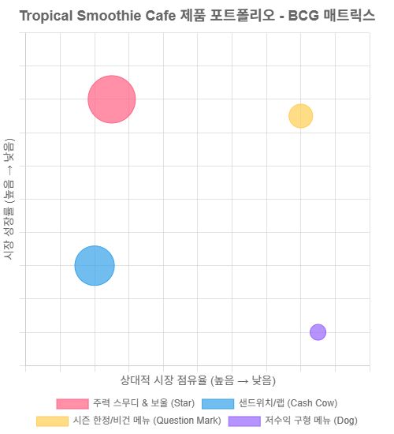

8 기업 수준의 전략 선택
8.1 시작하며
기업의 전략은 단일 사업 단위의 경쟁 우위 확보에 그치지 않는다. 한 단계 위인 기업 수준의 전략(corporate-level strategy)은 기업 전체가 어떤 사업 조합을 통해 장기적인 가치를 창출할지를 결정하는 전략적 선택의 문제다. 이는 어떤 제품을 만들지보다 어떤 산업에 진입하고, 어떤 산업에서 철수할지를 판단하는 결정과 맞물려 있으며, 경영자의 전략적 사고가 가장 광범위하게 요구되는 영역이다.
기업 수준의 전략은 본질적으로 다음 질문을 중심으로 형성된다.
- 어떤 산업에 참여할 것인가?
- 참여한 사업 간에 어떤 방식으로 시너지를 창출할 것인가?
- 자원의 배분은 어떻게 이루어져야 하는가?
이러한 질문은 단순히 새로운 수익원을 찾는 수준을 넘어, 기업 정체성의 재정립과도 연결된다. 예컨대, 아마존은 온라인 서점으로 출발했지만 AWS를 통해 클라우드 컴퓨팅 산업에 진입하면서 핵심 역량의 재정의와 사업 포트폴리오의 전환을 동시에 이뤄냈다. 이는 단순한 수평적 확장이 아니라, 기존 물류 인프라와 IT 역량이라는 기반 자산을 활용한 전략적 다각화의 대표 사례다.
기업 수준 전략의 핵심 축은 다각화(diversification)다. 다각화는 관련 다각화와 비관련 다각화로 나뉘며, 두 방식 모두 각기 다른 전략적 논리를 갖는다. 관련 다각화는 기존 사업과 기술, 시장, 자원 등이 겹치는 인접 영역으로의 확장을 의미한다. 삼성전자가 반도체, 스마트폰, 디스플레이 등 기술적으로 연결된 산업에 집중하는 전략이 대표적이다. 반면, 비관련 다각화는 명백한 시너지 없이 새로운 산업에 진입하는 것으로, 사업 포트폴리오의 리스크 분산을 목적으로 하는 경우가 많다. 롯데그룹이 식품, 유통, 화학, 금융 등 이질적인 분야를 동시에 영위하는 구조가 여기에 해당한다.
하지만 단순한 다각화가 반드시 성과로 이어지는 것은 아니다. 실제로 2000년대 초반 미국의 거대 기업 GE는 과도한 다각화로 인해 핵심 역량이 희석되며 기업가치가 하락했고, 결국 일부 사업을 매각하며 집중 전략(concentration strategy)으로 선회했다. 이는 다각화가 전략적으로 설계되지 않을 경우 오히려 자원의 분산, 경영 복잡성 증가, 시너지 미발현 등의 문제를 초래할 수 있음을 보여준다.
또한, 기업 수준 전략은 내부 성장(internal development)과 외부 성장(M&A)이라는 수단을 통해 실현된다. 내부 성장은 자사의 자원과 역량을 활용한 신사업 개발을 의미하고, 외부 성장은 인수합병을 통해 즉각적으로 시장 진입과 규모 확보를 노리는 방식이다. 예를 들어, 페이스북(메타)은 자체 기술로 메타버스를 개발하면서도, 인스타그램과 왓츠앱을 인수하여 성장 곡선을 단축시키는 전략적 조합을 선택해왔다.
최근 기업 수준 전략의 패러다임은 ESG와 디지털 전환이라는 흐름과 맞물리며 더욱 복잡해지고 있다. 기업은 더 이상 단순히 ’돈이 되는 산업’을 찾는 것이 아니라, 지속가능성과 기술 적합성, 그리고 브랜드 정체성과의 일치 여부까지 고려해야 한다. 애플은 자사의 브랜드 정체성과 일치하지 않는 광고 사업에는 뛰어들지 않았고, 대신 프라이버시 보호라는 브랜드 철학과 맞는 방향으로 전략을 설계했다. 이처럼 기업 수준 전략은 선택 못지않게 ’선택하지 않는 것’에 대한 전략적 명확성도 요구된다.
결론적으로, 기업 수준의 전략은 다음과 같은 축 위에서 구성되어야 한다.
1. 산업 선택의 전략적 일관성
2. 사업 간 시너지 창출 가능성에 대한 실증적 검토
3. 자원의 효과적 배분을 위한 조직 역량 확보
4. 시장과 기술 변화에 유연하게 대응할 수 있는 포트폴리오 구조
이 장에서는 이후 다각화 전략의 구체적 유형, 인수합병의 전략적 효과, 사업 구조조정과 관련된 의사결정 구조 등에 대해 보다 세부적으로 살펴볼 것이다.
8.2 기업 수준 전략의 정의
기업 수준의 전략(corporate-level strategy)은 기업이 어떤 산업 조합을 선택하고, 어떤 방식으로 사업 포트폴리오를 구성하며, 이들 사이에서 어떤 시너지를 창출할 것인가를 다루는 전략적 사고의 영역이다. 이는 단일 제품이나 시장에서 경쟁하는 비즈니스 수준 전략과 달리, 다수의 사업 간 관계와 통합적 가치 창출을 중심으로 설계된다.
기업 수준 전략의 출발점은 단순한 수익 다변화가 아니다. 기업의 정체성, 핵심 역량의 외연 확장, 리스크 관리, 지속가능한 성장 경로의 탐색이라는 전략적 목적과 연결되어 있다. 특히 시장의 불확실성이 증가하고 있는 오늘날에는 기업이 단일 산업에 의존하는 구조가 매우 취약해지기 때문에, 포트폴리오 전략을 통한 구조적 유연성 확보가 그 어느 때보다 중요해졌다.
대표적인 예로 애플은 하드웨어 중심 기업에서 벗어나 서비스 매출 비중을 지속적으로 확대하고 있다. 음악 스트리밍(Apple Music), 클라우드(iCloud), 구독 기반 게임(Apple Arcade), 금융 서비스(Apple Pay, Apple Card) 등은 모두 기존 제품 기반 위에 구축된 서비스지만, 사업 간 시너지와 데이터 자산의 활용이라는 기업 수준 전략의 핵심 논리를 따른다. 애플은 단일 제품이 아닌 플랫폼적 사고를 통해 다각화를 설계하며, 이는 단순한 매출 증가가 아닌 고객 생태계에 대한 지배력을 강화하는 방식으로 작동한다.
기업 수준 전략은 두 가지 기본 질문에 의해 구조화된다. 첫째, “우리는 어떤 산업에 있어야 하는가?”, 둘째, “이 산업들을 어떻게 조합하고 관리할 것인가?”. 이 질문은 다시 세부적인 의사결정으로 나뉘게 된다.
- 어느 산업 가치사슬의 단계에 참여할 것인가?
- 어떤 제품 및 서비스 범위를 설정할 것인가?
- 어떤 지리적 범위에서 경쟁할 것인가?
이 세 질문은 단순한 다각화의 의사결정이 아니라, 각 사업 간의 연계 가능성, 공유 가능한 자산과 역량, 조직문화의 호환성, 그리고 통합 시 발생하는 시너지 가능성을 분석해야 한다. 예컨대 테슬라는 전기차라는 하나의 제품 영역에 머무르지 않고, 에너지 저장 솔루션, 태양광 패널, 자동차 보험, 슈퍼차저 네트워크, 심지어 AI칩 설계와 로보틱스까지 진출하고 있다. 테슬라의 이러한 다각화는 서로 다른 산업이 아니라, 하나의 기술 기반 위에 구축된 통합 생태계라는 전략적 구심점을 가진다. 이는 “수직 통합 전략(vertical integration)”과 “관련 다각화(related diversification)”가 복합적으로 작동한 구조다.
반면, 관련성이 부족한 산업으로의 무리한 진출은 기업의 지속 가능성을 위협할 수 있다. 이랜드그룹은 원래 패션 사업에서 강한 입지를 가진 기업으로 출발했다. SPA 브랜드(자체기획제조형) 중심의 공격적인 사업 확장을 통해 국내 패션 시장에서 빠르게 성장했지만, 이후 외식업(애슐리, 자연별곡), 유통업(2003년 뉴코아, 2007년 킴스클럽, 동아백화점 등 인수), 테마파크(서울랜드 운영권 획득, 캐리비안베이 유사 사업 검토), 심지어 금융업까지 진출하며 다각화 전략을 전방위적으로 확대했다.
이 과정에서 공통된 핵심 역량이나 자원 기반 없이 이질적인 산업군에 진입했다는 점이 문제였다. 예를 들어, 패션과 외식, 테마파크는 운영 모델, 고객 경험 설계, 수익 구조, 인력 구조 등 모든 요소가 다르다. 또한, 유통업은 수익률이 낮고 자본 회전율이 느리며, 테마파크는 대규모 고정비가 지속적으로 발생하는 고위험 사업이다. 이런 산업들에 진입하면서도 각 사업군을 연결하는 유의미한 시너지 전략이나 내부 통합 프로세스를 구축하지 못했다.
그 결과, 이랜드는 내부 자원의 분산, 조직 복잡성 증가, 브랜드 정체성의 혼선, 운영 효율성 저하, 자금 유동성 문제 등 복합적인 위기를 맞게 된다. 특히 2016년 이후 급격한 실적 부진과 함께 구조조정이 본격화되었고, 주요 사업의 매각(예: 동아백화점 지분 매각), 사업 철수, 유상증자 등이 연이어 진행되었다. 외식사업 부문도 코로나19 팬데믹 이후 대규모 매장 운영 구조가 발목을 잡으며 큰 타격을 입었다.
이랜드 사례는 비관련 다각화가 단순히 사업군의 수를 늘리는 문제가 아니라, 기업의 정체성, 운영 시스템, 재무 구조, 핵심 역량과의 전략적 정합성이 전제되지 않으면 오히려 기업 전체를 위험에 빠뜨릴 수 있다는 교훈을 제공한다. 특히 자산 기반 확대와 단기 매출 증대를 중심으로 한 외형 성장 전략이, 실질적인 시너지 모델 없이 실행될 경우 “성장은 했지만, 강해지지 못한 기업”이라는 아이러니한 결과에 도달하게 된다.
따라서 기업 수준 전략에서의 다각화는 진입 산업 간의 전략적 연결 가능성, 운영상의 통합 효율성, 브랜드의 확장성, 그리고 자금 운용의 지속 가능성을 사전에 정밀하게 분석해야 하며, 단기적 성과에 기반한 무리한 확장은 결국 전략적 역량을 소모하고 시장 신뢰를 잃게 되는 결과로 귀결된다.
시너지를 창출할 수 있는 대표적인 경로로는 공동 브랜드 사용, 기술 플랫폼 공유, 유통망 통합, 고객 데이터의 통합 분석, 경영 자원의 내부 이전 등이 있다. 구글의 모회사 알파벳은 인공지능(AI) 기술을 중심으로 자율주행(웨이모), 헬스케어(베릴리), 통신 인프라(Project Loon) 등 전혀 다른 산업에 진출하면서도, AI 알고리즘과 인프라 자산이라는 공통된 코어를 중심으로 통합적인 포트폴리오 전략을 구현하고 있다.
기업 수준 전략의 수단은 내부 개발, 전략적 제휴, 인수합병(M&A) 등 다양하다. 특히 M&A는 빠르게 시장 진입이 가능하다는 장점이 있지만, 기업 문화의 통합, 중복 인력 및 조직 통합 비용, 예상 밖의 규제 리스크 등으로 인해 실패 확률도 높은 전략이다. 인수 후 실질적인 시너지가 구현되지 못할 경우, 단순한 자본 낭비가 아니라 조직 전체에 부정적 파급 효과를 줄 수 있다.
마지막으로, 기업 수준 전략은 지속적으로 재검토되어야 한다. 기술 변화, 경쟁 환경의 급변, 정치적 리스크, ESG 기준의 강화 등 외부 환경 요인이 급변하는 상황에서는 기존의 포트폴리오 구조가 오히려 독이 될 수 있다. 2020년 이후의 팬데믹은 글로벌 항공사, 크루즈 산업, 오프라인 기반 유통기업들의 전략적 포트폴리오에 결정적인 영향을 미쳤다. 항공 중심의 다각화를 추구한 버진그룹은 수익성 악화와 구조조정을 동시에 겪었고, 오프라인 매장 중심의 이마트는 디지털 전략 부재로 경쟁에서 뒤처졌다. 이처럼 기업 수준 전략은 환경에 따라 리프레이밍되고, 실시간으로 리스크를 흡수할 수 있는 구조적 민첩성이 요구된다.
결국 기업 수준 전략은 ’확장’의 문제가 아니라 ’연결’의 문제다. 단일 사업의 성과를 넘어, 전체 포트폴리오의 전략적 조합과 상호작용이 만들어내는 총합이 개별 성과보다 클 수 있는 구조, 바로 그것이 기업 수준 전략이 지향해야 할 방향이다.
8.2.1 다각화 전략
기업이 다각화 전략을 선택하는 이유는 명확하다. 단일 산업에만 집중할 경우, 경기 변동이나 기술 변화, 소비 트렌드의 급변 등에 따라 사업 전체가 동시에 위기에 빠질 위험이 존재하기 때문이다. 특히 최근처럼 산업 생명주기가 짧고, 기술 교체 주기가 급격히 빨라지는 환경에서는 사업 포트폴리오의 다양성과 구조적 유연성 확보가 기업의 생존 조건이 되고 있다.
다각화는 단순한 확장이 아니라, 전략적 위험 분산, 시너지 창출, 핵심 역량의 확장 가능성 실험, 시장 지배력 확대 등 다양한 목적을 복합적으로 포함하는 전략적 선택이다. 그러나 이 전략이 효과적으로 작동하기 위해서는 다각화의 방식, 진입 산업의 속성, 기업 내부 자원과의 정합성, 그리고 시너지 실현 가능성에 대한 종합적인 분석이 필요하다.
다각화 전략은 크게 세 가지 유형으로 구분된다. 첫째는 관련 다각화(related diversification)로, 기존 사업과 기술, 시장, 고객군, 브랜드, 유통망 등이 연관된 산업으로의 확장을 의미한다. 둘째는 비관련 다각화(unrelated diversification)로, 공통점이 거의 없는 산업으로의 진출을 뜻하며, 주로 리스크 분산이나 자산 재배치의 논리로 실행된다. 셋째는 지리적 다각화(geographic diversification)로, 동일한 사업모델을 기반으로 새로운 국가나 지역 시장에 진입하는 방식이다.
예컨대 넷플릭스는 스트리밍 콘텐츠라는 핵심 모델을 유지하면서도, 자회사 게임 개발사 넥스트게임즈를 인수하고 자체 게임 콘텐츠 제작에 진출했다. 이는 엔터테인먼트 경험이라는 공통된 가치 제안을 기반으로 한 관련 다각화다. 반면, 삼성그룹의 보험, 건설, 바이오 등은 서로 간 기술적 연관성이 낮은 비관련 다각화에 해당한다. 또한 쿠팡은 동일한 커머스 모델을 바탕으로 한국 외에도 대만, 일본, 싱가포르 등으로 확장하며 지리적 다각화를 추진 중이다.
하지만 다각화는 단순히 산업 수를 늘리는 게임이 아니다. 성공적인 다각화를 위해서는 세 가지 전략적 질문에 대한 검토가 필요하다. 이는 마이클 포터(1987)가 제시한 다각화 전략의 세 가지 테스트(Three Tests for Diversification)로 널리 알려져 있다.
첫 번째는 “진입하려는 산업이 매력적인가?”라는 질문이다. 해당 산업의 수익성이 낮거나 구조적 제약이 심각하다면, 아무리 유망해 보여도 장기적인 성장 동력이 되기 어렵다. 산업의 매력도는 포터의 5 Forces 프레임워크를 통해 경쟁 강도, 공급자·구매자의 교섭력, 대체재의 위협, 신규 진입장벽 등을 분석함으로써 평가할 수 있다. 예를 들어, 글로벌 식품 배달 시장은 빠르게 성장했지만 경쟁 과열과 낮은 진입장벽으로 인해 수익성 유지가 어렵다는 점에서 장기 매력도가 낮은 산업으로 간주된다.
두 번째는 “진입 비용이 정당화될 수 있는가?”이다. 새로운 산업에 진입하려면 막대한 초기 투자, 기술 확보, 인재 채용, 브랜드 구축 등의 비용이 발생한다. 만약 이 비용을 회수하기 어렵거나, 기존 사업의 수익을 잠식할 경우, 이는 장기적인 재무 리스크로 전환된다. 과거 수많은 기업들이 과대평가된 기업을 고가에 인수했다가 M&A 프리미엄의 저주에 시달렸다. 최근의 예로, 주가 상승에 취해 AI 스타트업을 고평가로 인수한 일부 빅테크 기업들은 이후 자산 감액을 겪으며 주주 신뢰를 잃었다.
세 번째는 “새로운 사업과 기존 기업 사이에 경쟁 우위를 강화할 수 있는 시너지가 존재하는가?”이다. 단지 포트폴리오 상의 확장이 아니라, 실제 운영·마케팅·브랜드·기술 등의 차원에서 상호간에 긍정적 피드백 루프가 형성되어야 한다. 예를 들어, 현대차그룹은 전기차 배터리셀 생산을 위한 계열사 간 공동 투자 및 기술 공유를 통해 비용 절감과 공급 안정성을 동시에 확보하고 있다. 반면 시너지가 없는 인수는 조직 통합 실패, 브랜드 훼손, 자본 잠식 등으로 이어진다.
다각화는 본질적으로 통제 가능한 확장 전략이어야 하며, 핵심 역량의 범위 안에서 실현되어야 한다. 확장 가능성과 통합 가능성은 다각화 전략의 양대 축이다. 다각화의 방향이 기업 정체성과 충돌하거나, 내부 역량의 한계를 넘어설 경우, 이는 전략적 기회가 아니라 구조적 위기를 초래할 수 있다. 따라서 전략적 다각화는 “할 수 있는가?”가 아니라 “해야만 하는가?”라는 질문으로부터 출발해야 한다.
8.2.2 관련 다각화
관련 다각화(related diversification)는 기업이 기존 산업과 기술, 고객, 유통 구조, 혹은 브랜드 자산 등의 측면에서 전략적으로 유사하거나 연계 가능한 분야로 사업을 확장하는 전략이다. 이는 단순한 확장이 아니라, 핵심 역량(core competencies)을 새로운 시장과 제품군에 이식하거나 확장함으로써 경쟁 우위를 다층적으로 창출하는 방식이다. 핵심 역량은 모방이 어렵고, 범용적 전이가 가능하며, 고객 가치에 실질적으로 기여하는 자산이나 역량을 의미한다.
이 전략은 시너지 효과를 실현하는 데 있어 가장 높은 확률을 제공하며, 새로운 시장 진입 리스크를 상대적으로 낮춰준다. 특히 기술, 브랜드, 유통망, 조직문화 등 기존 자원을 재활용하거나 확장 적용할 수 있다는 점에서, 고유 자산의 효율성을 극대화하는 전략적 접근으로 평가된다.
대표적인 사례는 삼성전자의 반도체–디스플레이–스마트폰 사업군 간의 연계 구조다. 삼성은 고성능 모바일 AP(Application Processor) 설계와 OLED 디스플레이 기술을 스마트폰 라인업에 직접 통합해 제품 간 상호 의존적 기술 생태계를 구축했다. 이로 인해 R&D 자산은 단일 사업에 종속되지 않고, 여러 산업을 동시에 강화하는 자산으로 전환된다. 이는 관련 다각화가 단지 유사 산업 간의 진입이 아니라, 핵심 자원의 전방위적 확장 전략이라는 점을 보여준다.
또 다른 예는 아마존의 물류 역량과 AI 기술을 기반으로 한 헬스케어 사업 진출이다. 아마존은 기존의 AI 음성 인터페이스, 디지털 처방전 플랫폼, 풀필먼트 네트워크를 통합해 온라인 기반 약국(PillPack)과 원격의료 시스템(Amazon Clinic)을 출범시켰다. 이는 기술적 공통성과 고객 신뢰 기반을 활용한 다각화 전략으로, 헬스케어라는 이질적 영역에서도 기존 인프라와 데이터 자산의 시너지를 적극적으로 활용한 경우다.
리바이스(Levi’s)는 단순 의류 제조업체가 아닌 라이프스타일 브랜드로서의 포지셔닝 확대를 위해, 아동복, 액세서리, 스포츠웨어 등으로 브랜드 확장을 추진하고 있다. 이 경우 핵심 자산은 브랜드 인지도와 디자인 능력이며, 해당 자산을 다양한 연령대와 생활 방식에 맞춘 제품군으로 전이시킴으로써 수직적 통합 없이도 포트폴리오 다양화를 실현했다.
하지만 관련 다각화가 항상 성공으로 이어지는 것은 아니다. 특히 표면적 유사성에만 근거해 산업에 진입할 경우, 핵심 역량의 적용 가능성이 과대평가되어 오히려 실패로 귀결되는 경우도 많다. 예를 들어, 과거 일부 게임 기업이 엔터테인먼트 IP의 확장 가능성만을 보고 OTT 플랫폼이나 영상 제작에 진출했지만, 콘텐츠 운영 능력과 글로벌 배급 역량 부족으로 수익화에 실패했다. 이는 핵심 역량이 실제로 ’전이 가능한가’에 대한 전략적 진단 없이 실행된 관련 다각화가 오히려 자원을 소모하고 조직 역량을 분산시키는 결과로 이어질 수 있다는 점을 경고한다.
외식기업의 관련 다각화 실패 사례: CJ푸드빌과 이랜드
관련 다각화는 유사한 산업 내에서 사업군을 확장함으로써 시너지를 추구하는 전략이다. 하지만 외식산업에서는 브랜드 간 충돌, 고객군 중복, 운영 복잡성 증가로 인해 이 전략이 실패하는 경우도 적지 않다. 특히 국내 대표 외식 대기업인 CJ푸드빌과 이랜드파크의 사례는 관련 다각화의 실패 원인을 전략적으로 이해하는 데 유의미하다.
사례 1: CJ푸드빌 – 확장된 포트폴리오의 역풍
CJ푸드빌은 2000년대 중후반 이후 ‘외식 한류’ 전략을 기반으로 빕스, 계절밥상, 더플레이스, 제일제면소, 차이나팩토리, 두찜, N서울타워 레스토랑 사업, 뚜레쥬르 등 다수의 브랜드를 동시 운영하며 다각화를 시도했다. 특히 차이나팩토리(중식), 더스테이크하우스(고급 스테이크), 계절밥상(한식 뷔페) 등은 유사한 식문화 기반을 공유했기에 관련 다각화 전략으로 분류된다.
하지만 2015년 이후 매출 정체와 조직 내 브랜드 간 고객군 경쟁, 고정비 부담 증가, 운영 효율성 저하 문제가 심화되었다. 각 브랜드가 다양한 고객 경험, 주방 시스템, 회전율 전략을 요구했지만 본사의 표준화된 통합 운영 전략이 이를 흡수하지 못했다. 그 결과, 차이나팩토리는 2017년 사업 철수, 계절밥상은 대규모 매장 철수 및 구조조정, 더스테이크하우스는 1개점만 유지되며 사실상 실패한 브랜드로 전락했다.
사례 2: 이랜드파크 – 브랜드 난립과 포트폴리오 관리 실패
이랜드그룹의 외식 부문 자회사인 이랜드파크는 애슐리(뷔페)의 성공 이후 더카페, 자연별곡, 로운샤브샤브, 수사, 피자몰 등 10개 이상 브랜드를 런칭했다. 모두 외식 산업군 내에서 유사 고객군과 공급망을 공유하는 형태로, 관련 다각화에 해당한다.
하지만 지나치게 빠른 브랜드 확장과 포지셔닝 중복, 브랜드별 핵심 콘셉트의 불명확성, 운영비와 인건비 증가에 따른 수익성 악화로 인해, 2018년 이후 다수 브랜드가 철수되었다. 특히 자연별곡과 피자몰은 상권 내 애슐리와 직접 충돌하는 구조였고, 결과적으로 고객 자기잠식(cannibalization) 현상이 심화되었다. 본사는 다각화 효과를 기대했지만, 결과적으로 자원 분산과 조직 비효율만 확대되었다.
전략적 분석: 왜 실패했는가?
1. 핵심 역량의 과신
- CJ와 이랜드 모두, 한두 개 브랜드의 성공을 조직 전체의 운영 능력으로 과대 일반화했다. 그러나 뷔페와 캐주얼 다이닝, 프랜차이즈 카페는 고객 행동, 회전율 전략, 서비스 스크립트가 다르며, 동일한 운영 시스템으로 관리하기 어렵다.
2. 브랜드 간 전략적 포지셔닝의 중복
- 외형상 유사한 콘셉트의 브랜드가 동일 상권에 중복 출점되며 시장의 자기잠식이 발생했다. 이는 관련 다각화의 본질인 시너지 창출이 아니라 경쟁 비용의 증가로 이어졌다.
3. 운영 구조의 복잡성 증가
- 서로 다른 주방 장비, 메뉴 개발, 인력 교육, 마케팅이 동시에 필요해지며 관리 복잡성 및 고정비 구조가 과도하게 상승했다. 다각화가 효율을 주지 못하고 비용 상승만 초래한 구조가 되었다.
관련 다각화는 산업, 고객군, 운영 체계 등에서 일정 수준의 공통 기반을 요구하지만, 단순한 ’유사성’이 아닌 실질적 전이 가능성이 전략의 전제가 되어야 한다. 외식산업처럼 고객 경험의 세부 요소가 중요한 분야에서는 특히 브랜드 간 차별화 전략, 고객 세그먼트 명확화, 운영 모델의 구조적 유연성이 확보되지 않으면, 다각화는 오히려 자원의 분산, 브랜드 가치 훼손, 수익성 악화라는 삼중 위기로 귀결된다.
성공적인 관련 다각화는 결국 “무엇이 연결 가능한가?”가 아니라 “무엇이 함께 작동할 수 있는가?”를 전략적으로 판단하는 과정에서 시작된다.
관련 다각화의 성패는 결국 핵심 역량의 범위, 전이 가능성, 조직 통합 능력에 달려 있다. 산업 간 기술이나 고객층이 유사하더라도, 조직 내부의 문화 충돌이나 통합 실패는 시너지를 무력화할 수 있다. 따라서 관련 다각화를 실행하려는 기업은 사전에 내부 자산이 실제로 새로운 산업에서도 작동하는가, 통합 관리체계가 가능한가, 전략적 일관성과 브랜드 아이덴티티가 유지되는가를 종합적으로 진단해야 한다.
결론적으로 관련 다각화는 기업이 이미 가진 것을 더 잘 활용하는 방식의 성장 전략이다. 하지만 이 ’활용 가능성’은 철저한 전략적 분석과 실행 역량이 전제되지 않으면 실현되지 않는다. 그럴 경우, 관련 다각화는 오히려 핵심 역량의 소모이자 정체성의 혼란으로 귀결될 수 있다.
8.2.3 비관련 다각화
비관련 다각화(unrelated diversification)는 기업이 기존의 산업, 기술, 시장, 고객군과 전략적 유사성이 거의 없는 분야로 진출하는 전략이다. 일반적으로 이는 핵심 역량 이전이나 시너지 창출보다 리스크 분산 또는 재무적 안정성을 주요 목적으로 한다. 일견 ‘산업 간 경계가 무너지는’ 디지털 전환 시대에 더욱 자연스럽게 보일 수 있으나, 핵심 역량이 전이되지 않는 구조에서의 다각화는 전략적 통제력을 약화시킬 위험이 매우 높다.
특히 한국 재벌 대기업의 성장 과정에서는 비관련 다각화가 구조적 특징으로 나타났다. SK그룹은 석유화학 중심 기업에서 반도체, 바이오, 투자금융, ICT 플랫폼 등으로 포트폴리오를 넓혀왔다. 한편, 그룹 내 개별 계열사들은 서로 다른 산업 구조, 규제 체계, 수익모델을 기반으로 운영되기 때문에, 내부 통합보다 재무적 포트폴리오 조정에 가까운 전략으로 비관련 다각화를 유지하고 있다. 이 경우 사업 시너지보다는 계열 분리와 지배구조 재편의 유연성이 중시되는 경향이 강하다.
한편, 실패한 비관련 다각화의 사례로는 쿠팡의 OTT 서비스(Coupang Play)가 대표적이다. 쿠팡은 커머스 플랫폼 기업임에도 불구하고 콘텐츠 제작과 스트리밍 서비스로 진출하면서, 자체 콘텐츠 제작비용, 경쟁사 대비 콘텐츠 수급 능력 부족, 낮은 고객 충성도 등의 한계를 드러냈다. OTT 산업은 커머스 산업과 기술 기반은 공유할 수 있지만, 콘텐츠 기획·운영·판권 계약·사용자 체류시간 설계 등은 전혀 다른 역량을 요구한다. 쿠팡은 쿠팡플레이를 통해 사용자 체류시간과 구독 유지를 꾀했지만, 실질적으로 전환율 개선이나 매출 연동 효과가 불명확했고, 막대한 적자가 지속되며 전략 수정이 불가피해졌다. 재미있는 것은, 현재 쿠팡은 쿠팡플레이 자체로는 이윤이 발생하고 있다고 보기 어렵고 오히려 손해를 보고 있다고 보는 것이 맞다. 그러나, 쿠팡은 쿠팡의 로켓배송, 쿠팡플레이 그리고 쿠팡이츠까지 엮어서 구독 비즈니스를 하고 있고, 이러한 구독비즈니스 모델에서 고객들은 주로 로켓배송의 락인 효과로 추가적인 이득을 쿠팡플레이와 쿠팡이츠에서 누리고 있다고 볼 수 있다. 사실상 쿠팡플레이 자체의 락인효과는 미미하고 자체 성과도 낮기 때문에 쿠팡플레이 사업 자체는 현재까지 실패라고 보는 것이 맞겠지만, 오히려 최근에는 쿠팡플레이를 무료로 전환하는 공격적인 전략을 펼치므로써, 쿠팡플레이가 기존의 미사용 고객을 끌어들이는 미끼상품 역할을 하고 있다고 볼 수 있다. 향후 이러한 전략의 성패는 시간을 두고 지켜봐야 할 것이다.
또한, 소프트뱅크의 비관련 다각화 실패도 대표적이다. 손정의 회장은 AI, 로보틱스, 바이오, 물류, 핀테크, 모빌리티 등 다양한 분야에 투자하며, 글로벌 테크 포트폴리오 구축 전략을 시도했다. 그러나 공유경제 기반의 위워크(WeWork), 물류 로봇 스타트업, 디지털 보험사 등은 시장성 과대평가, 비즈니스 모델 불확실성, 경영진 통제력 부족 등으로 인해 대규모 손실을 발생시켰고, 결국 비관련 다각화 전략에 대한 시장 신뢰가 약화되었다. 하지만, 여전히 소프트뱅크의 투자 포트폴리오는 무시할 수 없는 수준이다. 실패가 많기는 했으나 성공도 많았고 최근에는 OpenAI, Oracle과 함께 대규모 AI투자를 발표한 바도 있다. 향후 소프트뱅크의 투자결과를 주시해야할 이유이기도 하다.
이러한 실패 사례들은 다음과 같은 전략적 교훈을 제공한다.
첫째, 핵심 역량이 전이되지 않는 분야에서의 사업 확장은 시너지를 기대할 수 없으며, 오히려 리스크 관리 능력을 저하시킨다.
둘째, 비관련 다각화는 ’구조적 리스크 헷징’의 도구가 될 수 있지만, 경영 통제권과 문화적 통합능력 없이 실행될 경우 혼란만 초래한다.
셋째, 재무적 수익성 또는 성장 가능성만을 기준으로 산업을 선택할 경우, 해당 산업의 규제·운영·생태계 논리를 무시하게 되어 실행 실패로 이어진다.
결국 비관련 다각화는 포트폴리오 다변화를 통한 장기 안정성 확보라는 점에서 매력적인 전략일 수 있으나, 그 자체로 성장을 보장하지는 않는다. 실제 성공한 사례는 극히 제한적이며, 대부분은 재무 지표의 변동성 확대, 조직 복잡성 증가, 주주 가치 희석 등의 결과로 이어진다.
따라서 기업이 비관련 다각화를 고려할 경우 다음의 조건을 반드시 충족해야 한다.
- 강력한 조직 통제력과 경영 모니터링 시스템을 보유하고 있을 것
- 산업 간 구조적 차이를 흡수할 수 있는 계열사 독립 운영 체계를 구축할 것
- 단기 수익이 아닌 장기 전략 포트폴리오 설계의 관점에서 접근할 것
한마디로 비관련 다각화는 ‘다름을 연결하는’ 것이 아니라, ’다름을 관리하는 전략적 역량’이 존재할 때만 유효한 전략이다.
8.2.4 지리적 다각화
지리적 다각화는 기업이 기존의 산업 영역을 유지하면서 지리적 범위를 국내 또는 국외로 확장하는 전략이다. 이 전략은 매출의 지역별 집중도를 분산시켜 리스크를 완화하고, 운영 효율성과 규모의 경제를 극대화하는 수단으로 활용된다. 특히 외식 및 리테일 산업에서 지리적 다각화는 핵심 성장 전략으로 부상했다.
과거에는 선진국 기업이 저성장국에서 고성장 신흥국으로 진출하는 것이 일반적인 흐름이었으나, 최근에는 신흥국 로컬 브랜드가 역으로 글로벌 시장에 진출하거나, 디지털 플랫폼을 활용해 국경 없는 운영 체계를 구축하는 양상이 나타나고 있다.
예를 들어, 중국의 해산물 뷔페 체인 ’HaiDiLao’는 싱가포르, 미국, 일본, 한국 등지로 빠르게 확장하며 지리적 다각화를 추진했다. 이 회사는 고유의 ’고객 서비스 경험’과 ’비용 절감형 주방 자동화 시스템’을 현지 매장에 그대로 이식하면서, 브랜드의 핵심 역량을 국제 시장에서도 유지하는 데 성공했다. 물류, 교육, 인사 시스템은 중국 본사에서 통합 운영하면서도, 현지 직원 채용과 식자재 로컬 소싱을 결합해 유연한 로컬라이징 전략을 구현했다.
반면, 한국의 BBQ 치킨은 미국, 캐나다, 동남아시아 등지로 매장을 확장하면서 일관된 브랜드 운영 전략과 메뉴 구성, 현지화된 마케팅, 프랜차이즈 중심의 빠른 전개 구조를 통해 성과를 창출하고 있다. 특히 북미 시장에서는 K-pop 열풍과 결합된 한식 트렌드와 연계해, 단순한 해외 진출이 아닌 문화적 스토리텔링 기반의 다각화라는 측면에서 의미 있는 사례다.
지리적 다각화는 단순히 물리적 매장 수를 늘리는 전략이 아니다. 성공적인 지리적 다각화를 위해서는 다음의 구조적 요인이 중요하다.
첫째, 운영 자원의 표준화와 통합이다. 물류, 공급망, HR, 교육 시스템을 본사에서 통제하면 지역별 운영 효율을 극대화할 수 있다. 이러한 통합은 중복 인프라 비용을 절감하고, 브랜드 정체성을 일관되게 유지하는 데 필수적이다.
둘째, 지식과 경험의 전이 메커니즘이다. 기존 시장에서의 매장 개설, 직원 교육, 수요 예측, 매출 관리 등에서 확보한 ’운영의 모범 사례’를 신시장에 빠르게 전파할 수 있다면, 신규 진입에 따르는 시행착오를 최소화할 수 있다.
셋째, 현지화 전략과 본사 시스템의 균형 조율이다. 모든 국가에 동일한 운영 시스템을 강요하기보다는, 핵심 역량은 본사에서 유지하되 고객 경험은 현지에 맞게 재설계하는 방식이 효과적이다. 예컨대 일부 기업은 메뉴는 현지화하지만 서비스 표준은 본사 가이드를 고수하거나, 가격은 탄력적으로 조정하지만 인테리어와 유니폼은 통일하는 식이다.
하지만 지리적 다각화는 항상 성공적인 결과를 보장하지 않는다. 맥도날드는 인도 진출 초기에 쇠고기 사용 금지, 현지 프랜차이즈 파트너 갈등, 고용 법규 충돌 등으로 오랜 시간 고전했다. 이 사례는 단순한 복제 전략이 문화적, 제도적, 정치적 맥락에 부딪힐 수 있음을 시사한다.
따라서 지리적 다각화는 단지 ’매장을 해외에 더 내는 것’이 아니라, 다양한 제약조건 하에서도 기업의 핵심 역량과 브랜드 가치를 일관되게 전달할 수 있는 역량이 있는지를 가늠하는 전략적 시험대다. 이를 통해 성공한 기업은 단지 매출만 증가시키는 것이 아니라, 글로벌 운영 경험, 위기 대응력, 문화 적응력이라는 지속가능한 성장 자산을 확보하게 된다.
8.2.5 수평 통합: 인수/합병
수평 통합은 기업이 동일한 산업 내 경쟁자를 인수하거나 합병함으로써 시장 점유율을 확대하고 경쟁 강도를 낮추려는 전략적 움직임이다. 이 전략은 일반적으로 규모의 경제 실현, 비용 절감, 브랜드 강화, 유통망 통합, 경쟁 억제 등을 목적으로 한다. 하지만 성공 사례만큼이나 실패 사례도 빈번히 보고되며, 그 원인은 대부분 통합 시너지 부재, 과도한 프리미엄 지급, 문화 충돌에 있다.
최근 사례 중 주목할 만한 것은 2020년대 초반 미국 유통업계에서 일어난 Kroger와 Albertsons의 합병 시도다. 이는 미국 내 두 대형 식료품 체인이 하나의 기업으로 통합되어 Amazon Fresh 및 Walmart와의 경쟁을 본격화하려는 움직임이었다. 그러나 이 거래는 독점 우려로 연방거래위원회(FTC)의 반발에 부딪혔다. 이 사례는 수평 통합이 단순히 비용 절감을 넘어서 산업 구조에 미치는 영향력이 크다는 점을 보여준다.
한편, 한국에서는 카카오의 멜론 인수가 대표적인 수평 통합 사례다. 기존 모바일 플랫폼과 음악 스트리밍 서비스를 결합하여 사용자 데이터를 통합하고, 광고 및 콘텐츠 유통의 시너지를 창출하는 데 성공했다. 이와 같은 인수는 기술과 사용자 경험의 통합이라는 무형의 자산을 극대화하는 전략으로 작동한다.
KT는 2008년 디지털 광고 시장의 급성장을 예상하며 디지털 광고 플랫폼 기업인 ‘나스미디어(Nasmedia)’를 인수했다. 당시 KT는 유무선 통신 사업자에서 벗어나 디지털 콘텐츠와 광고 플랫폼을 통합한 ICT 융합 사업자로의 전환을 시도하고 있었고, 이에 따라 광고 데이터 기반 수익 모델 확보가 전략적 목적이었다. 나스미디어는 인터넷, 모바일, IPTV 등 다중 플랫폼 광고 네트워크를 갖춘 독립적 회사로, 당시 국내 최대 규모의 디지털 미디어렙이었다.
그러나 인수 초기부터 예상과 다른 문제들이 드러나기 시작했다. KT는 그룹 차원의 강력한 통합 관리와 자산 운영 효율화를 추진했지만, 나스미디어는 빠른 실행력과 유연한 조직 문화를 중시하는 스타트업적 기동성에 기반한 회사였다. 이로 인해 관리 방식의 충돌, 성과 기준 불일치, KPI 과도 설정 등이 발생했고, 일부 창립 멤버 및 핵심 임원이 조직을 떠나는 인재 이탈 현상이 나타났다. 특히 인수 직후 2년간은 KT그룹 내 사업 우선순위 변화로 인해 광고 사업의 내재화가 지연되었고, 시너지 효과를 거의 창출하지 못하는 시기가 이어졌다.
2014년부터 KT는 나스미디어를 독립 자회사 형태로 존중하며 자율성 강화 전략으로 전환했다. 이 결정은 디지털 광고 시장이 RTB(실시간 입찰 광고) 중심으로 전환되며 전문성과 속도가 핵심 경쟁력이 된 환경 변화에 대응한 것이었다. 이후 나스미디어는 모바일 광고와 데이터 기반 마케팅 영역에서 SKT 자회사 인크로스, 카카오의 모빌리언스와 경쟁하면서 자체적인 역량을 강화했고, 2018년부터는 연평균 20% 이상의 매출 성장률을 기록하기 시작했다.
2020년대 들어 KT는 그룹의 디지털 플랫폼(DIGICO) 전략에 발맞추어, 나스미디어를 디지털 전환 중심 축 중 하나로 적극 활용하고 있다. 특히, 빅데이터 기반 타겟 마케팅, KT Seezn·올레TV 등 자체 미디어 플랫폼과의 연계 광고 상품, 광고 트레이딩 데스크 확장 등을 통해 다시금 시너지를 가시화하고 있다.
2024년 기준으로 나스미디어는 모회사인 KT가 공개한 DIGICO 전략의 주요 광고 데이터 허브로 기능하며, KT의 AI 기반 고객분석 엔진 및 IPTV, 5G 통신 기반 플랫폼들과 연결되어 통합 마케팅 솔루션을 제공 중이다. 매출 기준으로도 국내 미디어렙 업계 2위권을 안정적으로 유지하고 있으며, 최근에는 CTV(Connected TV) 및 OTT 광고 네트워크 확장을 추진 중이다.
특히 수평 통합은 포터의 5가지 힘 모델 중 경쟁자 간의 기존 경쟁 강도, 신규 진입자 위협, 대체재 위협을 조절하는 효과가 있다. 경쟁사 인수를 통해 산업 내 경쟁 강도를 낮추면, 전체 시장의 수익성이 증가할 가능성이 높아진다. 하지만 이는 동시에 규제기관의 감시 강화라는 리스크를 수반한다.
또한 수평 통합의 또 다른 동기는 유통 채널 확보다. 한 예로, Craft Beer 업계에서 AB InBev는 수많은 지역 소규모 양조장을 인수하며 유통 채널을 장악하고 브랜드 포트폴리오를 확대했다. 이러한 움직임은 단순한 시장 점유율 확보를 넘어서 선호도 기반 브랜드 세분화 전략의 일환으로 해석할 수 있다.
문제는 재무적 관점에서 볼 때 수평 통합이 항상 주주 가치를 제고하지 않는다는 점이다. 다수의 연구들은 전체 인수합병의 60%~90%가 기대한 시너지를 실현하지 못하거나 오히려 손실로 귀결된다고 보고한다. 이들 실패는 주로 과잉 낙관주의, 전략적 부적합성, 통합 실패에서 비롯된다. 대표적인 실패 사례인 다임러-크라이슬러 인수는 양측이 자동차 제조업이라는 동일 산업군에 속했음에도 불구하고, 경영 철학과 조직 구조가 전혀 달라 단기간 내 붕괴된 사례다.
결국 수평 통합은 단기적 이익이나 규모 확대보다 장기적인 전략 정합성과 문화적 융합 가능성에 기반해 판단해야 한다. 단순히 브랜드 이름이나 시장점유율만 보고 이루어진 인수는, 전략적 시너지보다는 오히려 통합 비용과 조직 피로도를 초래하는 부채가 될 수 있다. 성공적인 수평 통합을 위해선 비전 일치, 핵심 인재 유지, 기술 및 데이터 인프라 통합 전략이 명확히 설계되어야 한다.
8.2.6 수직 통합
수직 통합은 기업이 가치 사슬의 앞이나 뒤로 이동하여 원재료 확보부터 최종 소비자 전달까지의 다양한 단계에 직접 참여하는 전략이다. 이 전략은 공급업체나 유통업체에 대한 의존도를 낮추고, 더 나아가 비용 통제력과 운영 효율성을 높이는 데 목적이 있다. 포터의 5가지 힘 모델에서 말하는 공급자의 협상력 또는 구매자의 협상력을 약화시키기 위한 효과적인 수단으로도 분석된다.
과거 제조업 중심의 시대에는 제철소, 자동차 제조사, 석유 정제업체들이 적극적으로 수직 통합을 시도했다. 그러나 오늘날에는 테크 기업과 외식기업들까지도 수직 통합의 새로운 해석을 시도하고 있다. 특히 디지털 플랫폼과 실제 유통 인프라의 결합, 콘텐츠 생산과 배포의 통합이 활발해지면서 수직 통합의 적용 범위는 확장되고 있다.
최근 한국의 식품 외식업계에서는 하림그룹의 사례가 수직 통합의 교과서적 전개로 주목받고 있다. 하림은 축산물 가공뿐 아니라 사료 생산, 도축, 냉장물류, 온라인 플랫폼(하림몰), 그리고 외식 브랜드(하림순닭, 치킨플러스 등)까지 전 밸류체인을 통합 운영하고 있다. 특히 코로나19 이후 B2C 유통망 확대가 중요한 전략으로 부상하면서, 하림은 자체 물류센터 및 밀키트 생산기지를 확장해 외식업에서 유통까지의 연결고리를 강화하고 있다. 이는 단순히 원가 절감 이상의 전략적 의미를 갖는다. 고객 데이터를 축적하고, 상품 개발에 직접 반영할 수 있는 피드백 루프를 형성함으로써 시장 대응 속도를 높이고 있다.
반면 실패 사례도 있다. CJ그룹은 외식 브랜드(빕스, 계절밥상 등)를 운영하면서 동시에 자체 가공식품 및 식자재 유통망을 확대했지만, 유통과 외식 간의 의사결정 속도 차이와 마케팅 시너지 부족으로 인해 2020년 이후 외식 부문 매각설이 반복적으로 제기되었다. 이는 수직 통합의 구조가 단순히 자회사 확보로 완성되는 것이 아니라, 조직 간의 프로세스 일치와 시장 요구 반영 능력이 동반되어야 한다는 점을 보여준다. 물론 현재는 뚜레쥬르의 미국진출 등으로 기업의 활력이 되살아나고 있다. 뿐만 아니라, 비효율 브랜드 점포의 빠른 스크랩을 통해 재무적 안정성확보를 빠르게 진행하여, 팬데믹을 겪으면서 오히려 기업의 재무적 안정성은 더 좋아졌다.
수직 통합은 때때로 새로운 사업의 복잡성 증가와 역량 미비로 인해 기업의 기민성을 저해하는 경우도 많다. 예컨대, 알루미늄 생산 기업이 캔 제조업체를 인수한 뒤 오히려 내부 조달에 안주하며 품질 개선과 혁신의 동기를 상실한 사례는 이 전략의 내재된 리스크를 시사한다. 실제로 많은 기업들은 자회사에 외부 공급자와 경쟁을 강제해 내부 효율성을 유지하려 하지만, 이는 애초의 수직 통합 의도와 충돌하기도 한다.
수직 통합은 공급 안정성 확보와 원가 경쟁력 강화를 위한 전략으로 여전히 유효하다. 그러나 오늘날에는 고객 경험 통합과 데이터 통제권 확보가 중요한 이유로 추가되고 있다. 예를 들어 애플은 매장(Apple Store), 결제(Apple Pay), 콘텐츠(App Store)까지 직접 통제하며 생태계를 완성했고, 이는 단순한 유통 통합을 넘어 고객과의 접점을 독점하는 전략적 수직 통합이다.
결국 수직 통합은 단기적 비용 절감을 넘어서 장기적 경쟁 우위 창출 구조를 구축할 수 있는가의 여부가 핵심이다. 기업이 가치 사슬 상의 어느 지점에서 통제권을 강화하고 혁신을 가능하게 할 것인지, 그리고 그 과정에서 조직 역량과 문화적 적합성을 고려할 수 있는지가 성공 여부를 가른다.
전방 수직 통합
전방 수직 통합은 기업이 가치 사슬을 따라 구매자와 가까운 영역으로 진입하여 제품이나 서비스를 최종 소비자에게 직접 제공하는 전략이다. 이는 중간 유통 과정을 생략하고, 유통 마진을 자사로 흡수함으로써 수익성을 극대화하려는 목적에서 출발한다. 동시에 고객 접점을 확보함으로써 브랜드 통제력을 높이고 고객 경험을 직접 관리할 수 있다는 점에서도 전략적 이점이 크다.
대표적인 사례로 애플은 애플스토어를 전 세계 주요 도시에 직영 체제로 운영함으로써 전방 수직 통합의 전형을 보여준다. 애플스토어는 단순한 판매 장소를 넘어 브랜드 경험 공간으로 기능하며, 제품 체험, 수리, 기술 지원까지 포괄하는 종합적 고객 접점으로 설계되었다. 이를 통해 애플은 단순히 하드웨어 판매에 그치지 않고 고객 생애가치(Lifetime Value)를 극대화하는 구조를 구축했다. 애플스토어 직원은 제품에 대한 깊은 이해를 바탕으로 맞춤형 추천과 상담을 제공하고, 이는 Best Buy나 Office Depot처럼 다양한 브랜드를 취급하는 대형 소매점과 명확한 차별점을 만든다.
아마존 역시 전방 수직 통합의 주요 사례로 진화하고 있다. 아마존은 유통 플랫폼에서 출발했지만 점차 자체 브랜드인 AmazonBasics, Amazon Essentials 등의 상품군을 구축하고, 이를 자사 플랫폼에서 우선 노출시키는 전략을 취하고 있다. 또한 2017년 Whole Foods 인수를 통해 오프라인 유통망을 확보하고, Amazon Go와 Amazon Fresh 등 무인 매장 실험도 확대하고 있다. 이는 전통적 유통 기업과 비교해 자체 물류, 판매, 재고 관리를 통합적으로 통제함으로써 원가 절감과 고객 데이터 확보 모두를 달성하고자 하는 전략이다.
디즈니는 콘텐츠 기업임에도 불구하고 전방 통합을 적극적으로 시도한 대표 기업이다. 디즈니는 글로벌 테마파크, 크루즈, 리조트, 디즈니스토어 등을 직접 운영하면서 콘텐츠 IP를 활용한 소비자 경험을 직접 설계하고 제공한다. 이는 단순히 제품을 유통하는 것이 아니라 브랜드 세계관을 고객에게 직접 전달하는 방식이며, 전방 수직 통합의 목적이 단순한 유통 이익 확보를 넘어선다는 점을 시사한다.
하지만 전방 수직 통합이 항상 성공적인 것은 아니다. 포드의 허츠 인수는 렌터카 수요와의 시너지를 기대하고 추진되었지만, 차량 판매보다 렌터카 운영의 효율성이 낮고, 운영 리스크가 증가함에 따라 결국 포드는 허츠를 다시 매각했다. 이는 수직 통합이 단순히 구매자의 가격 협상력을 회피하기 위한 수단으로만 사용될 경우 지속 가능성이 낮을 수 있다는 점을 보여준다.
국내에서도 쿠팡은 로켓배송을 기반으로 전방 수직 통합을 심화하고 있다. 초기에는 외부 판매자의 상품을 중개하는 형태였지만, 지금은 자체 브랜드(PB)를 확대하고, 물류망, 배송 시스템, 반품 서비스까지 전 과정에 개입함으로써 소비자 경험을 완전히 통제하고, 반복 구매와 락인 효과를 유도하고 있다. 이는 단순한 소매가 아닌, 데이터 기반 풀필먼트 기업으로의 전환이라는 전략적 목표를 뒷받침하는 구조이기도 하다.
결론적으로 전방 수직 통합은 단순히 유통채널 확보를 넘어, 브랜드 경험의 통제, 고객 접점 확대, 유통 마진 흡수, 데이터 기반 전략 전개 등 다양한 전략적 효과를 창출할 수 있다. 그러나 유통 구조가 복잡하거나, 수요 예측이 불안정한 산업에서는 고정비 증가, 재고 리스크, 채널 갈등 등의 문제로 실패할 가능성도 존재하므로, 산업 구조와 기업의 역량을 정밀하게 진단한 후 실행해야 할 전략이다.
후방 수직 통합
후방 수직 통합(backward vertical integration)은 기업이 가치 사슬의 상류로 진출하여 기존에 외부에 의존하던 원재료, 부품, 기술, 콘텐츠 등의 공급 영역을 직접 확보하거나 통제하는 전략이다. 이 전략은 공급자의 힘을 약화시키고, 비용 통제 및 품질 확보, 납기 안정성 등의 목적을 동시에 달성할 수 있다는 점에서 기업의 경쟁력을 강화하는 수단으로 활용된다.
과거 제조업 중심의 산업에서는 철강, 석유, 자동차 산업에서 주로 나타났지만, 최근에는 IT, 미디어, 외식, 플랫폼 산업 등 다양한 분야에서 후방 통합 전략이 등장하고 있다.
애플(Apple)은 반도체 칩 ’M 시리즈’를 자체 설계하며 후방 수직 통합 전략의 대표 사례가 되었다. 기존에는 인텔과 같은 외부 공급자에게 의존했지만, 애플은 고성능, 저전력 프로세서라는 핵심 기술을 직접 통제함으로써 자사 제품의 차별성과 생태계 통합을 동시에 추구했다. 이는 Macbook과 iPad, iPhone의 통합적 사용자 경험과도 연결되며, 애플의 브랜드 충성도와 제품 혁신의 원천이 되었다.
넷플릭스(Netflix) 역시 후방 수직 통합의 상징적 기업이다. 초기에는 영화사, 방송사에서 콘텐츠를 공급받아 플랫폼을 운영하던 구조였지만, 2013년 ’하우스 오브 카드(House of Cards)’를 시작으로 독자적인 콘텐츠 스튜디오를 구축했다. 이후 오리지널 콘텐츠 제작을 가속화하면서 공급자에 대한 의존도를 줄이고, 차별화된 콘텐츠 경쟁력을 확보하게 되었다. 이는 콘텐츠 가격의 급등과 독점 콘텐츠 계약에 따른 협상력 약화를 우려한 전략적 대응이기도 했다.
국내 사례로는 카카오엔터프라이즈가 대표적이다. 카카오는 인공지능 서비스 경쟁력을 높이기 위해 AI 음성 합성, 검색, 이미지 생성 등의 핵심 엔진을 자체 개발하고 있으며, 이를 기반으로 챗봇, 음성 비서, 콘텐츠 추천 등 다양한 서비스에 적용하고 있다. 이처럼 핵심 기술을 직접 확보하려는 시도는 기존 클라우드 및 검색엔진 외주에 대한 의존을 줄이고, 차별화된 사용자 경험을 강화하려는 후방 통합 전략으로 볼 수 있다.
외식업계에서도 후방 통합은 유효한 전략으로 활용되고 있다. 예를 들어 맥도날드는 패티, 감자, 빵 등의 주요 식자재를 특정 계약농장 및 가공업체와 독점적으로 연결하여 품질과 공급안정성을 확보했다. 또한 일부 국가는 맥도날드가 아예 자회사를 통해 물류 시스템 전체를 직접 운영함으로써 비용 통제와 품질 표준화라는 이중 목표를 달성하고 있다.
하지만 후방 수직 통합이 항상 성공적인 것은 아니다. 자체 기술력이나 역량 부족, 비효율적인 내부 운영, 빠른 기술 변화에 대한 대응력 부족은 후방 통합 실패의 핵심 요인이다. 대표적 실패 사례 중 하나는 테슬라가 자체 배터리 셀 생산을 위해 추진한 초기 ‘기가팩토리’ 프로젝트에서 발생한 생산 지연과 수율 문제였다. 기술이 확보되지 않은 상태에서 섣불리 후방 통합을 단행할 경우, 오히려 핵심 부품의 병목과 제품 전체의 신뢰도 하락으로 이어질 수 있다.
따라서 후방 수직 통합은 단순히 공급망 안정성 확보를 위한 전략이 아니라, 기업이 해당 공급영역에서 기술적 경쟁력과 운영 역량을 확보할 수 있느냐에 따라 성패가 갈린다. 인수·합병을 통한 진입보다는 내부 개발, 기술 제휴, 혹은 계약 생산 방식 등을 병행하면서 점진적으로 통제력을 높이는 방식이 최근 트렌드이다.
후방 통합은 비용절감과 차별화를 동시에 노릴 수 있는 매력적인 전략이지만, 지나친 통제는 오히려 유연성을 해치고 핵심 역량 집중을 방해할 수 있다. 성공적인 후방 수직 통합은 기술 확보, 운영 효율, 시장 대응력이라는 세 가지 요소가 균형을 이룰 때 가능하다.
8.3 기업 전략 실행
기업이 다각화, 통합, 제휴 등의 전략을 채택한 이후에는 해당 전략을 효과적으로 실행하는 과정이 성공의 핵심을 결정짓는다. 전략 그 자체가 아무리 정교하고 타당하더라도, 실행이 부실하면 전략은 실패로 귀결된다. 실제로 다각화를 시도한 기업 중 상당수가 기대한 성과를 달성하지 못했으며, 그 원인의 대부분은 실행력 부재에 있다.
8.3.1 내부 개발 (Internal Development)
내부 개발은 기업이 외부 자산이나 기업에 의존하지 않고 새로운 비즈니스나 시장을 자체적으로 창출하는 방식이다. 이 전략은 시간이 오래 걸리고 많은 자원을 필요로 하지만, 그만큼 통제력과 독립성이 높으며 장기적으로 차별화된 경쟁력을 구축할 수 있다. 최근에는 샤오미(Xiaomi)가 스마트폰을 넘어 스마트홈, 전기차 등으로의 진출을 내부 개발 방식으로 진행하며 다각화 전략을 실행하고 있다. 이들은 자체 R&D 역량을 기반으로 전기차 브랜드 SU7을 2024년에 공개했고, 애플과 테슬라를 동시에 벤치마킹하며 하드웨어-소프트웨어 통합 전략을 전개하고 있다. 내부 개발은 장기적이고 리스크가 높지만, 성공할 경우 진입장벽을 형성하고 브랜드 충성도를 극대화할 수 있다는 장점이 있다.
8.3.2 전략적 제휴 (Strategic Alliance)
전략적 제휴는 독립된 두 기업이 상호 보완적인 자산이나 역량을 공유하면서 협력 관계를 맺는 구조다. 최근 사례로는 마이크로소프트와 오픈AI의 제휴가 있다. 마이크로소프트는 오픈AI에 수십억 달러를 투자함으로써 AI 기술을 자사 클라우드 서비스 Azure에 통합할 수 있는 독점적 권리를 확보했다. 이는 단순한 기술 협력 이상의 전략적 파트너십으로, 클라우드 시장과 AI 생태계 모두에서 경쟁우위를 확보하는 결과를 낳았다. 또한 국내에서는 현대자동차와 SK온의 제휴를 통해 배터리 공급망 안정화와 전기차 생산의 연계성을 강화한 사례가 있다. 전략적 제휴는 자본을 직접 투자하지 않고도 시장 진입이나 역량 확대가 가능하다는 점에서 유연한 전략이지만, 협력관계의 관리 실패나 이해 상충이 발생할 경우 심각한 갈등으로 이어질 수 있다.
8.3.3 합작 투자 (Joint Venture)
합작 투자는 두 개 이상의 기업이 공동으로 제3의 신규 법인을 설립해 특정 사업을 운영하는 방식이다. 특히 글로벌 진출이나 기술 공동개발 등에서 효과적이다. 예컨대, 삼성전자와 하만(Harman)은 스마트카 분야의 플랫폼 기업을 공동 설립해 자율주행 기술의 표준화를 추진하고 있다. 또 다른 사례로는 SK하이닉스와 솔리다임(Solidigm)이 고성능 SSD 기술 개발을 위해 JV를 구성한 경우가 있다. 합작 투자는 리스크 분산과 역량 결합의 장점이 있지만, 의사결정 구조가 복잡하고 분쟁 발생 시 해소 비용이 크다는 한계도 존재한다.
8.3.4 인수합병 (Mergers and Acquisitions)
인수합병은 기업이 전략을 가장 빠르게 실행할 수 있는 방법이자, 가장 위험한 방식이기도 하다. 인수합병을 통한 다각화는 보통 시간과 자원의 한계를 극복할 수 있다는 장점이 있지만, 통합 실패나 시너지 미실현의 리스크가 높다. 최근 쿠팡이 간편결제 업체인 페이플을 인수하고, 대만·일본 등 해외 진출을 위해 로컬 물류업체 인수를 추진한 것은 공격적 M&A 전략의 대표적인 사례다. 그러나 인수 이후 핵심 인력 유출, 문화 충돌, 통합 비용 증가 등의 문제는 지속적으로 발생하고 있으며, 이는 인수 당시 충분한 사전 실사와 통합 계획이 결여되었음을 보여준다. 또 다른 사례로는 NAVER가 글로벌 웹툰 플랫폼 ’왓패드’를 인수하며 콘텐츠 생태계 확장을 시도한 사례가 있으며, 이는 콘텐츠 수직 통합 전략의 일환으로 평가된다.
한편, 전방 및 후방 수직 통합 전략도 인수합병을 통해 실행된다. 예를 들어 테슬라는 배터리 생산 공장을 직접 보유하기 위해 배터리 스타트업 Maxwell Technologies를 인수했고, 이는 후방 통합을 통해 핵심 자원의 안정성을 확보하려는 시도였다. 하지만 실제 생산라인 내재화 과정에서의 비용 증가와 수율 문제는 아직 해결되지 않은 과제로 남아 있다. 따라서 M&A는 실행 방식 중 가장 강력하지만, 사전 평가, 통합관리, 이해관계자 설득이라는 고난도 실행 역량을 필요로 한다.
8.3.5 실행 전략의 선택 기준
전략 실행 방식의 선택은 단순한 자원 보유 여부뿐만 아니라 속도, 통제력, 리스크, 비용, 생태계 내 위치 등을 고려해 결정되어야 한다. 예를 들어 빠른 시장 진입이 절대적인 경우 인수합병이 선호되며, 장기적으로 브랜드와 기술 역량을 내재화하려는 경우 내부 개발이 유리하다. 글로벌 시장에서의 신뢰 확보가 중요한 경우 전략적 제휴 또는 합작 투자가 현실적인 대안이 된다. 요컨대, 실행 전략은 전략적 목표와 외부 환경, 내부 역량 간의 정합성에 기반하여 설계되어야 한다.
전략의 실행은 전략 그 자체만큼이나 중요하다. 위대한 전략도 잘못된 실행으로 무너질 수 있으며, 평범한 전략도 탁월한 실행을 통해 위대한 성과를 창출할 수 있다. 실행의 정밀도와 리더십의 역량이 기업 전략의 실현 여부를 좌우한다는 점에서, 전략 실행은 더 이상 부차적 활동이 아니라 전략적 성공의 본질적 구성요소이다.
8.4 축소 전략
기업 전략의 본질은 ’어떤 산업에 진출할 것인가’에 대한 선택이지만, 그 반대로 어떤 산업에서 철수할 것인가에 대한 전략적 판단도 포함된다. 환경 변화, 기술적 전환, 수익성 악화, 경쟁 격화 등 다양한 이유로 기업은 사업 축소 또는 철수를 선택하게 된다. 이러한 선택은 단순한 포기가 아니라, 생존과 재도약을 위한 의도적 전략으로 작용할 수 있다.
8.4.1 리트렌치먼트 전략
리트렌치먼트 전략은 일정 부분의 사업을 축소하거나 철수하여 조직 전체의 생존과 회복을 도모하는 전략이다. 이 용어는 제1차 세계대전의 참호전에서 유래되었으며, 전선을 후퇴시키는 전략처럼 기업도 한 발 물러섬으로써 궁극적인 패배를 피하고 핵심 역량을 보호하려는 전략이다.
리트렌치먼트의 가장 일반적인 형태는 감원과 구조조정이다. 예를 들어 2020년 코로나19 팬데믹 당시 글로벌 항공 산업 전반은 대규모 리트렌치먼트를 단행했다. 싱가포르항공은 전체 직원의 약 20%에 해당하는 4,300명을 감원했으며, 루프트한자는 자회사 매각과 항공기 수 줄이기를 포함한 구조조정을 실행했다. 이러한 결정은 단기적인 고통을 감수하더라도 조직 전체의 생존 가능성을 높이기 위한 선택이었다.
최근의 대표적인 사례는 메타(Meta)의 대규모 구조조정이다. 2022년부터 2023년까지 메타는 2만 명 이상의 직원을 감축했으며, 메타버스 관련 투자 실패와 광고 매출 감소, 기술 산업 전반의 침체가 주요 원인이었다. 그러나 이 과정에서 핵심 인프라와 AI 중심 사업 부문은 유지되었고, 조직의 방향성도 “효율의 해(Year of Efficiency)”로 명명되며 축소된 자원 안에서 성과 극대화를 도모했다. 메타는 이후 주가 회복과 AI 경쟁력 강화를 이루며 일시적 리트렌치먼트가 장기적으로 선택과 집중을 가능케 한 전략적 조정이었음을 입증했다.
또한, 2025년 5월, Microsoft는 글로벌 인력의 약 3%인 6,000명에 달하는 대규모 감원을 발표했다. 이는 최근 인수 및 확장 이후 두 번째로 큰 규모의 감원이었으며, 특히 관리직과 AI 관련 부서에서 인력이 크게 줄었다. 전직 AI 스타트업 담당 책임자 Gabriela de Queiroz를 포함한 AI 리더들도 감원 명단에 오른 점은 경영진의 AI 관련 조직 재편 및 비용 효율화 의지를 보여준다. Microsoft는 OpenAI에 대한 대규모 투자와 함께 Azure AI, Copilot 등 AI 서비스 고도화에 집중하고 있다(2025 회계연도 내 AI 관련 인프라 구축만 800억 달러 규모). 이 과정에서 AI 전략은 강화되었지만 이를 감당할 조직 구조와 역할 설정은 명확하지 않았다. 신설된 AI 조직과 기존 R&D 및 제품부서 간 역할 중복 문제가 노출됨에 따라 AI 리더십 및 중복 직무 감원을 통한 조직 슬림화가 불가피했다.CEO Satya Nadella는 “AI는 기술이 아니라 조직 문화의 변화”라고 강조하면서, 감원은 중간 관리자 계층 축소와 코더 인력 비중 확대를 목표로 한 조직 구조 개편의 일부로 설명했다. 이는 연간 두 차례의 감원을 통해 AI 중심의 조직 역량 재편을 추진한다는 의미다. 특히 제품 엔지니어링 및 분석 역량이 중요해지면서, 관리 중심의 구조는 효율성 저하를 초래할 수 있다는 판단이 뒷받침됐다 .
감원 소식이 전해진 후 내부는 혼란과 당혹감이 팽배했다. LinkedIn 등에서는 찬성과 안타까움이 엇갈렸으며, 한 직원은 “AI 부문 책임자마저 해고된 것을 보면, 누구도 안전하지 않다”며 우려를 표출했다. 이로 인해 직원들은 불안감을 느끼며 내부 사기 및 조직 안정성에 대한 우려가 커졌다. 감원 직후 Microsoft 주가가 큰 타격 없이 반등했고, 2분기 실적 발표에서도 매출과 수익은 견조하게 유지됐다 . 이는 단기적 감원이 AI 인프라 투자와 조직 효율 향상이라는 경영 전략 변화와 무관하지 않으며, 효율성 중심의 조직 개편으로 ‘Year of Efficiency’ 메시지를 실행한 결과로 해석된다.
MS의 이번 AI 관련 감원은 단순한 비용 절감이 아닌 조직 구조 재편과 혁신 주도력 확보라는 복합 전략이었다. 전술적인 감원을 통해 관리 계층의 비효율을 제거하고, 핵심 AI·엔지니어링 인력 비중을 늘리는 전략적 축소가 실행된 것이다. 최근 언급된 것처럼 방만한 인력 구조는 혁신의 발목을 잡으며, AI 인프라 구축 및 활용 중심의 조직 변화 필요성이 현실화된 것이다 .
다만 AI 리더십을 포함한 고위급 감원은 조직 분열과 사기 저하라는 리스크를 수반한다. 따라서 이러한 리트렌치먼트는 명확한 비전 제시, 재훈련 프로그램, 조직 내 커뮤니케이션 강화와 병행되어야 한다. MS는 향후 AI 중심 조직은 효율성과 민첩성을 유지하면서도 직원의 역량전환과 제조적 재배치를 지원하는 중장기 실행력이 중요하다.
한국의 대표 유통기업 롯데그룹 역시 2021년 이후 비핵심 계열사 매각 및 조직 구조조정을 통해 불필요한 자원 분산을 줄이고 핵심 사업에 집중하는 전략을 펼쳤다. 특히 롯데쇼핑은 수익성이 낮은 점포를 과감히 철수하며 오프라인 매장 구조를 개편하고, 동시에 디지털 전환을 가속화했다. 이는 단순한 철수가 아닌 디지털 중심 구조로의 이행을 위한 전략적 축소라 볼 수 있다.
리트렌치먼트 전략은 단기적으로 조직 구성원에게 충격을 주고 사회적 비판을 받을 수 있으나, 전략적 명확성과 실행의 일관성, 핵심 자산 보호와 재배치가 수반될 때 위기 극복을 위한 강력한 수단이 될 수 있다. 기업은 감원이나 철수라는 선택이 끝이 아니라, 생존과 재성장을 위한 시장의 재정의와 구조 재설계의 시작점이 되어야 한다는 점을 인식해야 한다.
8.4.2 구조 조정
기업이 생존이나 성장 전략의 일환으로 일부 사업을 축소하거나 분할하는 전략을 선택하는 경우가 있다. 이러한 구조 조정은 더 이상 시너지 효과를 기대하기 어렵거나, 시장과 투자자에게 더 높은 가치를 제공하기 위해 기업 자체를 분할하거나 축소하는 방식으로 진행된다. 이때 사용되는 주요 전략이 바로 스핀오프(Spin-Off), 사업 매각(Divestiture), 그리고 청산(Liquidation)이다.
스핀오프는 기존 기업이 자사의 일부 사업부를 독립적인 신규 회사로 분리시키는 구조 조정 방식이다. 분할된 회사는 독립된 경영권과 운영 구조를 갖추고 자율적으로 시장에서 경쟁하게 된다. 이는 다각화로 인해 지나치게 복잡해진 사업 구조를 단순화하고, 각 사업부가 자신들의 핵심 역량에 집중하도록 유도할 수 있다. 또한 분할된 각 기업은 고유의 전략과 브랜드를 구축함으로써 시장에서 재평가될 가능성이 높아지며, 자본시장에서는 스핀오프된 기업과 기존 기업 각각의 기업가치를 보다 명확하게 반영하는 주가 형성이 가능해진다.
예컨대, 최근 화이자(Pfizer)는 자사의 특허 만료가 임박한 브랜드 의약품 및 소비재 사업부를 분리하여 ’Haleon’이라는 독립 기업으로 상장시켰다. 이는 기존의 혁신 중심 제약사업과 소비자 헬스케어 산업이 지닌 본질적 속성의 차이를 반영하고, 각 부문이 각자의 전략적 지향점에 더욱 집중할 수 있도록 한 조치였다. 이처럼 스핀오프는 전략적 집중도를 높이고, 자원배분의 효율성을 개선하며, 관리 복잡성을 줄이는 효과를 가진다.
반면, 사업 매각(Divestiture)은 특정 사업을 외부 기업에 판매하거나 투자자에게 넘기는 방식이다. 이는 수익성이 낮거나 시너지 효과가 불충분한 사업을 정리하고 핵심 역량에 집중하기 위한 전술적 선택으로 이루어진다. 특히 후방 또는 전방 수직통합이 전략적 유효성을 상실했을 때, 기존의 수직 계열 구조를 해체하기 위한 방식으로도 사용된다. 예를 들어, 최근 IBM은 인프라 서비스 부문을 Kyndryl이라는 별도 법인으로 분사한 후, 향후 핵심 전략인 클라우드 및 AI 중심 사업에 자원을 집중하고자 인프라 서비스를 전면 매각했다. 이 조치는 IBM의 오랜 기간 유지해온 통합 IT 서비스 모델에서 탈피하여, 혁신 중심의 민첩한 기술기업으로 탈바꿈하는 계기가 되었다.
더 나아가, 기업이 보유한 자산이나 브랜드를 시장에 매각할 수조차 없는 경우에는 청산(Liquidation)이라는 극단적인 구조 조정을 택해야 한다. 청산은 사업을 완전히 종료하고 남은 자산을 매각하여 채권자와 주주에게 분배하는 절차다. 일반적으로 이는 지속적인 적자 또는 시장 변화에 적응하지 못한 기업이 최후로 선택하는 방식이다. 최근의 사례로, 미국의 대형 백화점 체인 ’Lord & Taylor’는 코로나19 이후의 유통환경 변화에 대응하지 못하고 2020년 파산을 선언한 후 완전 청산 절차를 밟았다. 이 결정은 더 이상 수익성과 회생 가능성이 없다고 판단된 사업을 과감히 종료하는 전략적 철수의 대표적 예다.
이처럼 구조 조정은 단순한 축소가 아닌, 기업의 생존과 장기 전략적 재정비를 위한 핵심 수단이다. 복잡성과 비효율성, 다각화로 인한 디스카운트 문제가 누적될수록, 기업은 구조조정을 통해 새로운 기회를 창출하고 자본시장의 신뢰를 회복할 수 있다. 성공적인 구조 조정을 위해서는 시장과의 신뢰 기반 커뮤니케이션, 핵심 역량의 재정의, 그리고 전략적 우선순위 설정이 반드시 병행되어야 한다.
8.4.3 포트폴리오 계획과 기업 전략
다양한 사업을 영위하는 기업은 각 사업부문이 어느 정도의 성과를 내고 있으며, 향후 어떤 방향으로 전략을 수정해야 할지를 지속적으로 평가해야 한다. 특히, 복수의 산업에 동시에 참여하고 있는 대기업의 경우, 각 사업부문 간의 자원 배분은 기업의 장기적인 생존과 성장에 중대한 영향을 미친다. GE, 삼성, LG와 같은 복합 대기업들은 단순히 수익 창출을 넘어서 사업 포트폴리오의 균형, 전략적 조정, 리스크 분산을 위해 포트폴리오 관리 방식을 채택하고 있다.
이러한 포트폴리오 관리의 대표적인 도구가 바로 BCG 매트릭스다. 보스턴컨설팅그룹(BCG)이 1970년대 초에 개발한 이 매트릭스는 각 사업 부문을 산업의 성장성과 자사 시장점유율을 기준으로 네 가지 범주로 분류함으로써, 경영진이 자원 배분의 우선순위를 시각적으로 판단할 수 있도록 한다.
가장 먼저, 산업의 성장률은 해당 사업이 속한 시장의 외적 기회를 대변하며, 시장점유율은 기업의 상대적 경쟁력을 나타낸다. 이 두 가지 축을 기준으로 각 사업은 스타(Star), 캐시카우(Cash Cow), 물음표(Question Mark), 도그(Dog)로 나뉜다.
스타는 빠르게 성장하는 시장에서 높은 점유율을 기록하는 사업으로, 성장 가능성과 수익성을 동시에 갖춘 핵심 부문이다. 이 부문에는 과감한 자원 투입과 R&D 확대가 필요하며, 향후 기업의 중심이 될 가능성이 높다.
캐시카우는 성장률은 낮지만 높은 시장 점유율을 보유한 안정적인 사업이다. 수익성이 높고 지속적인 현금흐름을 창출하므로, 이익을 스타나 물음표 부문에 재투자하는 원천으로 활용된다. 하지만 시장 성장이 정체된 만큼 추가 투자보다는 효율적인 운영과 비용절감에 중점을 두어야 한다.
물음표는 성장률은 높지만 시장 점유율이 낮은 부문이다. 기회의 영역이지만 현재 경쟁력이 떨어지므로, 추가 투자 여부에 대한 전략적 판단이 필요하다. 잠재력이 크지만 불확실성이 존재하기 때문에, 리소스 투입 전에 기술력, 유통망, 브랜드 역량 등을 철저히 검토해야 한다.
도그는 성장률과 점유율 모두 낮은 비효율 사업이다. 이 부문은 일반적으로 철수, 매각 또는 구조조정의 대상으로 간주되며, 자원의 낭비를 줄이기 위한 전략적 결단이 요구된다.
최근 사례를 보면, 구글(알파벳)은 자사의 포트폴리오를 BCG 매트릭스에 따라 정교하게 관리하고 있는 대표적 기업이다. 유튜브와 구글 검색은 캐시카우로서 막대한 현금을 창출하고 있으며, 이 수익은 Waymo(자율주행), Verily(디지털 헬스케어), DeepMind(인공지능) 등의 스타 혹은 물음표 부문에 전략적으로 재투자되고 있다. 반면, 수익성이 떨어지거나 기술 우위 확보가 어려운 일부 프로젝트는 조기에 종료하거나 구조 조정을 단행해 왔다.
또한 국내 대기업인 삼성전자도 반도체 부문을 스타로, 모바일 사업은 캐시카우로 운용하며, 디스플레이나 바이오센서 등은 물음표에 해당한다. 다만 최근 스마트폰 시장의 성장 둔화와 중국 브랜드의 부상으로 모바일 부문이 스타에서 캐시카우로 이동하고 있는 양상은 향후 전략 수정의 신호탄이다. 문제는 기술변화와 경쟁자의 추격 그리고 시장환경의 급변으로 인해 전반적인 사업이 점점 캐시카우에서 물음표 혹은 도그로 움직이고 있다는 점이다.
BCG 매트릭스의 강점은 직관적인 시각화와 자원 배분에 대한 명확한 기준을 제공한다는 점에 있다. 그러나 단점도 명확하다. 산업의 성장률과 시장 점유율이라는 두 변수만으로 복잡한 사업 현실을 판단하기 어렵고, 시너지를 무시한 개별 사업 단위 중심의 평가 방식은 기업의 통합 전략과 괴리가 발생할 수 있다. 또한, 상대적 시장점유율 기준이 애매하거나 데이터가 부족한 경우, 매트릭스 자체가 왜곡된 판단을 유도할 위험도 존재한다.
그럼에도 불구하고 BCG 매트릭스는 기업 전략의 출발점이자, 포트폴리오 수준에서의 전략적 사고를 자극하는 실용적인 틀로서 여전히 유효하다. 단순한 구분을 넘어, 각 사업부문에 맞는 맞춤형 실행 전략과 장기적인 비전 수립으로 연결될 때 그 진정한 가치가 실현된다.
8.5 포트폴리오 계획의 한계
포트폴리오 계획, 특히 보스턴 컨설팅 그룹(BCG) 매트릭스는 기업이 다각화된 사업 포트폴리오를 체계적으로 관리하고 자원 배분을 결정하는 데 유용한 도구로 자리 잡아 왔다. 그러나 이 접근은 몇 가지 중대한 한계점을 내포하고 있으며, 빠르게 변화하는 오늘날의 복잡한 경영 환경에서는 단순한 분류 기반 도식만으로는 충분치 않다는 점이 명확해지고 있다.
첫 번째 한계는 지나치게 단순화된 분석 프레임워크다. BCG 매트릭스는 시장 성장률과 상대적 시장 점유율이라는 두 가지 축만을 사용하여 사업 단위를 분류한다. 하지만 실제 경쟁 환경은 훨씬 더 복합적이다. 경쟁 강도의 구조적 요인, 기술 변화 속도, 소비자 전환비용, 규제 리스크, ESG 평판 등은 매트릭스 외부에 존재하면서도 전략적 결정에 막대한 영향을 끼친다. 예를 들어, 글로벌 제약 기업들은 상대적으로 시장 성장률이 낮은 산업에서 활동하더라도 지적 재산권, 승인 속도, 정부 정책 등 비시장적 요소에 의해 수익성이 좌우되는데, 이는 매트릭스에서 간과된다.
두 번째로, 포트폴리오 분류는 조직 내부의 심리적·정치적 갈등을 유발할 수 있다. 캐시카우로 분류된 사업부는 성장을 기대하지 못한 채 이익만을 착취당한다는 인식에 빠지기 쉽고, 도그로 낙인찍힌 사업부는 기업 내부에서 전략적 소외 계층으로 전락하며 직원의 사기 저하를 불러온다. 실제로 GE는 2010년대 중반 이후 수익성은 낮지만 핵심 기술 자산을 보유한 부문들을 단순히 ’도그’로 판단하고 매각 또는 청산 결정을 내렸지만, 이후 장기 기술 경쟁력 손실이라는 부메랑을 맞았다. 이처럼 도식적인 분류는 경영진의 전략적 직관이나 잠재 성장 동력을 간과하게 만들 수 있다.
세 번째 한계는 미래 전략의 탐색과 설계에 거의 기여하지 못한다는 점이다. 포트폴리오 매트릭스는 현재의 사업 구성을 분류하고 해석하는 데 집중되어 있으며, 새로운 시장 기회를 발굴하거나 기존 사업 간 시너지를 설계하는 데는 활용도가 떨어진다. 예컨대 구글(알파벳)은 초기 포트폴리오 분석 기준으로 보면 유튜브, 안드로이드, 자율주행 기술부문 모두 ‘물음표’ 혹은 ’도그’로 분류될 수 있었지만, 장기적인 성장성을 기반으로 지속적인 투자를 이어간 결과, 이 부문들이 지금은 알파벳 전체 가치를 견인하는 스타로 변모하였다. 이러한 사례는 포트폴리오 분석 도구가 단기적 수치에 매몰될 경우 혁신적 전환의 가능성을 포착하지 못하게 만들 수 있음을 경고한다.
마지막으로, BCG 매트릭스는 사업 간 상호작용 또는 시너지 효과를 고려하지 않는 구조적 한계를 갖고 있다. 매트릭스는 개별 사업을 독립적인 단위로 분리해 분석하지만, 현실의 다각화 전략은 사업 간 자산 공유, 브랜드 레버리지, 공급망 통합 등을 통해 복합적인 가치를 창출한다. 삼성전자는 반도체, 모바일, 디스플레이 사업 간의 연계성을 전략의 핵심으로 삼고 있는데, 이러한 관계는 단일 사업 부문이 시장 점유율만으로는 설명할 수 없는 가치를 만들어낸다. 따라서 단편적인 분류보다 다차원적 통합 분석이 더욱 요구되는 시대다.
결국 포트폴리오 계획은 과거에는 탁월한 자원 배분 도구였지만, 오늘날과 같은 동태적이고 다층적인 경쟁 환경에서는 분석의 출발점일 뿐 전략의 종결점이 되어서는 안 된다. 경영진은 이 도구의 구조적 한계를 이해한 후, 이를 보완할 수 있는 동태적 역량 분석, 시나리오 기반 미래 예측, 가치 네트워크 관점 등을 병행하여 전략적 통찰을 도출해야 한다.
8.6 포트폴리오 계획의 진화
GE/McKinsey 9-Cell Matrix와 SPM
전통적인 BCG 매트릭스는 전략 포트폴리오 분석의 출발점으로서 기업의 자원 배분 결정을 지원해 왔다. 그러나 두 개의 단일 차원(시장 성장률, 시장 점유율)만을 고려하는 이 도구의 한계는 점차 분명해졌고, 이에 대한 대안으로 GE/McKinsey 9-Cell Matrix와 전략적 포트폴리오 관리(Strategic Portfolio Management, SPM)가 등장하게 되었다.
8.6.1 GE/McKinsey 9-Cell Matrix (GE Business Screen)
GE가 맥킨지와 함께 개발한 이 매트릭스는 보다 정교하고 다차원적인 분석을 가능하게 하는 포트폴리오 평가 도구다. BCG 매트릭스의 단순한 2×2 구조에서 진화하여, 이 도구는 3×3의 9개 셀을 사용하며, 각 축의 평가 기준을 단일 지표가 아닌 복합적 요소의 가중 평균으로 계산한다.
8.6.1.1 핵심 구조
- X축: 사업부의 경쟁력 (Business Unit Strength)
- 예: 상대적 비용 우위, 브랜드 인지도, 기술력, 공급망 통제력 등 다양한 내부 요인
- Y축: 산업의 매력도 (Industry Attractiveness)
- 예: 시장 성장률, 진입장벽, 산업 수익성, 경쟁 강도, 규제 환경 등 외부 요인
각 사업부는 이 두 축의 종합 평가에 따라 9개의 셀 중 하나에 배치되며, 위치에 따라 다음의 전략 방향이 제시된다:
- 상단 우측(High-High): 집중 투자 및 성장
- 중간 (Medium): 선택적 성장 또는 선별적 철수
- 하단 좌측(Low-Low): 철수 또는 청산 고려
8.6.1.2 BCG와의 주요 차이점
| 항목 | BCG Matrix | GE/McKinsey Matrix |
|---|---|---|
| 축의 수 | 2 (시장 성장률, 점유율) | 2 (경쟁력, 산업 매력도) |
| 측정 방식 | 단일 수치 기반 | 다차원 평가 기준의 가중 평균 |
| 셀 구조 | 4셀 (2×2) | 9셀 (3×3) |
| 전략적 정밀도 | 낮음 (도식적) | 높음 (정책적 유연성 고려 가능) |
8.6.1.3 주의사항
- 지표 선정과 가중치 부여에 있어 경영진의 주관이 개입될 여지가 큼.
- 9개의 셀에 따라 다양한 전략적 조합이 가능하지만, 실행 복잡성 또한 증가.
8.6.2 Strategic Portfolio Management (SPM)
SPM은 단순한 분류 기반 매트릭스를 넘어서, 전략 목표와의 정렬, 가치 기반 자원 할당, 시장의 동적 변화 반영, 그리고 디지털 포트폴리오 트래킹을 포함하는 포괄적인 전략 관리 접근법이다. 전통적인 포트폴리오 도구가 “무엇을 유지하고, 성장시키고, 철수시킬 것인가”에 초점을 맞췄다면, SPM은 “전략 목표와 연동된 사업구조 전체의 최적화”를 지향한다.
SPM의 핵심 구성요소
1. 전략 정렬(Strategic Alignment): 모든 사업 및 프로젝트 포트폴리오가 상위 전략 목표와 얼마나 일치하는지를 평가한다.
2. 가치 기반 자원 배분(Value-based Resource Allocation): 단순한 수익성 기준이 아닌, 장기적 전략 가치, ESG 평가, 리스크 분산 등을 고려한 자원 재배치.
3. 동적 시나리오 분석(Dynamic Scenario Planning): 고정된 셀 분류가 아닌, 거시환경 변화나 기술 혁신에 따라 사업 조합을 재구성하는 능력 포함.
4. 디지털 트래킹 및 KPI 기반 운영관리: 예를 들어 OKR(Objectives & Key Results), KPI Dashboard, Agile 기반 전략 회고 등 지속적 조정 가능성 확보.
8.6.3 실제 기업사례: 마이크로소프트(Microsoft)의 SPM 적용
MS는 Satya Nadella 체제 이후 적극적인 포트폴리오 조정을 통해 클라우드 중심 구조로 급속 전환하였다. Azure, Teams, Dynamics 등의 성장은 전략 포트폴리오 분석의 직접 결과였다. 이 과정에서 SPM의 핵심 요소들이 다음과 같이 활용되었다:
- 전략 정렬: 모든 제품·서비스는 “Cloud-first, AI-first” 전략과 정렬되어야 한다는 대원칙 아래 평가되었고, 이 기준에 부합하지 않는 기존 프로젝트(예: Windows Phone, Cortana 스피커)는 중단되었다.
- 가치 기반 배분: 매출 규모는 작더라도 미래 핵심축이 될 AI·보안 부문에 인력을 재배치하고 대규모 투자를 단행하였다.
- 시나리오 계획: 팬데믹 이후 원격근무 급증에 맞춰 Teams를 중심으로 협업 플랫폼을 재정비하고, Zoom과의 경쟁 구도를 전략적으로 설계했다.
- 디지털 KPI 트래킹: OKR 시스템 도입을 통해 각 부서의 전략 목표와 실제 성과 간의 정합성을 주기적으로 점검하고, 이를 기반으로 다시 자원 재배분을 단행하였다.
8.6.4 요약: 세 접근법의 차이와 전략적 함의
| 구분 | BCG Matrix | GE/McKinsey Matrix | SPM |
|---|---|---|---|
| 초점 | 단순 분류 및 투자 판단 | 정교한 자원 배분 판단 | 전략 정렬과 가치 기반 최적화 |
| 분석 단위 | 시장 점유율 및 성장률 | 경쟁력 및 산업 매력도 | 전략 적합도, 가치 창출, KPI 정렬 |
| 실시간성 | 낮음 | 중간 | 높음 (실시간 KPI 반영) |
| 유연성 | 낮음 | 중간 | 매우 높음 |
| 도입 난이도 | 낮음 | 중간 | 높음 (디지털 시스템, 문화 필요) |
BCG와 GE/McKinsey 매트릭스는 여전히 전략적 사고 훈련과 초기 사업 분류에 유용하지만, SPM은 오늘날처럼 빠르게 변화하는 환경에서 기업의 전략적 민첩성과 정렬 능력을 극대화할 수 있는 근본적 대안이다. 특히 디지털 전환, ESG, 불확실성의 시대에 SPM은 단순한 분석 툴을 넘어 경영관리 체계 전체를 재설계하는 프레임워크로 진화하고 있다.
8.7 마무리하며
기업 수준의 전략은 단일 제품이나 사업을 넘어서, 조직 전체의 방향성과 생존 방식을 결정하는 핵심적인 문제다. 경영진은 단순히 ’어떻게 경쟁할 것인가’를 넘어서, ‘어떤 산업에 존재할 것인가’, ‘어떤 조합으로 포트폴리오를 구성할 것인가’, 그리고 ‘어떻게 확장 또는 축소할 것인가’라는 근본적 질문에 답해야 한다.
기업 다각화 전략은 그 출발점이다. 단일 산업에서 벗어나 새로운 영역으로 진출하려는 기업들은 관련 다각화(예: 애플의 칩 설계 내재화) 또는 비관련 다각화(예: 아마존의 헬스케어 진입)를 선택한다. 이는 새로운 수익원을 창출하고, 리스크를 분산하며, 규모의 경제나 범위의 경제를 통해 경쟁우위를 도모하려는 시도다. 다각화는 단지 제품 포트폴리오의 확장만이 아니라, 기업의 정체성과 가치 제안의 재정의를 동반한다.
이러한 확장의 방식은 내부 개발, 전략적 제휴, 합작 투자, 인수합병 등 다양한 형태로 나타난다. 인텔의 이스라엘 AI 칩 스타트업 Habana Labs 인수는 고성장 분야에 대한 외부 역량 내재화의 사례이며, 현대자동차와 보스턴 다이내믹스의 제휴는 전략적 제휴를 통해 미래 모빌리티 영역으로의 확장을 모색한 전형이다. 물론 현대자동차가 이전에 보스턴 다이내믹스를 인수합병하고 난 이후의 전략적 제휴이긴 하다.
한편, 기업이 가치 사슬 상의 인접 단계로 확장할 경우 수직 통합 전략이 발생한다. 후방 통합은 공급망 통제와 원가 안정화, 전방 통합은 고객 경험과 수익 구조의 통제력 확보를 목적으로 한다. 테슬라가 배터리 생산에 직접 진출한 것은 후방 통합의 대표 사례이며, 디즈니가 스트리밍 플랫폼 디즈니+를 출범시키며 유통 채널을 직접 통제한 것은 전방 통합의 구체적 전략이다.
그러나 모든 확장이 성공적인 것은 아니다. 기술 변화, 시장 포화, 외부 충격 등으로 인해 기업은 때때로 전략적 후퇴를 선택해야 한다. 구조조정(Retrenchment)은 단순한 축소가 아니라 생존을 위한 선택이며, 최근 MS가 AI 조직을 포함한 일부 부서를 대규모로 감원한 사례는, 성장 분야조차도 전략적 정렬이 불충분하면 정리 대상이 될 수 있음을 보여준다. 특히 이 감원은 “AI는 전체 전략의 핵심이지만, 전 부문이 그에 부합하지는 않는다”는 판단에 따른 것이다.
이러한 맥락에서 포트폴리오 계획 도구는 다각화된 기업의 전략적 결정을 지원하는 유용한 틀을 제공한다. BCG 매트릭스는 직관적이나 단순화의 한계를 가지며, GE/McKinsey 매트릭스는 보다 정교한 분석을 통해 전략 선택의 다양성을 제공한다. 그러나 오늘날의 불확실한 환경에서는 전략적 포트폴리오 관리(SPM)처럼 실시간 KPI, ESG 평가, 전략 정렬도를 반영한 동적 자원 배분 체계가 요구된다.
결국, 기업 수준 전략이란 단일한 해답이 있는 공식이 아니라, 기회와 위험, 확장과 축소, 내부 역량과 외부 협력 간의 긴장 속에서 균형을 찾아가는 과정이다. 성공적인 기업은 이 균형의 감각을 유지하며, 각기 다른 전략적 도구와 접근 방식을 통합하여, 변화하는 세상 속에서도 일관된 방향성을 지켜나간다.
실습 모듈 : 인수합병 (M&A) 분석 GPT 실습
다음은 Blackstone의 2024년 Tropical Smoothie Cafe에 대한 20억 달러 인수와 관련한 분석 프롬프트이다. 주어진 프롬프트를 이용하여 인수합병에 대한 결과 보고서를 작성하시오. 프롬프트는 기본 프롬프트일뿐, 본인이 추가적인 조사와 개인적인 인사이트를 추가하여 보다 구체적이고 현실적이며 합리적인 보고서를 최종적으로 제출해야함. 다음의 프롬프트를 이용한 보고서는 아래에 있으니 아래에 제시된 보고서보다 더 구체적이고 개인적인 판단과 생각이 담긴 보고서를 만들어 보시오.
## 📊 Blackstone의 2024년 Tropical Smoothie Cafe 20억 달러 인수 심층 분석 지침
### 1️⃣ 문제 정의
- **사실 명시**: Blackstone이 2024년 Tropical Smoothie Cafe를 **20억 달러**에 인수하였음을 서두에 명확히 기재
### 2️⃣ VRIO 분석
1. **사업 분야 비교**
- 인수 이전 두 기업의 주요 사업 영역 및 제품·서비스 차이 분석
- 인수 이후 두 기업의 통합 사업 범위 및 시너지 평가
2. **운영 방식 비교**
- 인수 전·후 운영 구조, 공급망, 인력 배치, 디지털화 정도 비교
3. **재무 구조 비교**
- 부채·자본 비율, 현금흐름, 수익성 지표 변화
4. **VRIO 분석 (가치·희소성·모방 가능성·조직)**
- 인수 이후 두 기업이 보유한 핵심 자원과 역량의 지속적 경쟁우위 여부 판단
### 3️⃣ BCG 매트릭스
- **시장점유율** vs **시장성장률**을 기반으로 Tropical Smoothie Cafe 및 주요 제품군 포지셔닝
- 시각 자료로 4분면 매트릭스(스타·문제아·현금젖소·개) 표시
### 4️⃣ 전략적 다각화 평가
1. **다각화 여부 판단**
- 인수 대상 산업의 기존 Blackstone 포트폴리오와의 산업·시장 차이 분석
2. **성공 가능성 및 리스크**
- 시장 성장성, 브랜드 가치, 소비자 트렌드 분석
- 잠재적 리스크 요인(공급망, 규제, 브랜드 통합 문제 등) 제시
### 5️⃣ 인수금액 적정성 평가
1. **전통적 M&A 평가 방법 적용**
- DCF(현금흐름할인법), EV/EBITDA 멀티플, P/E 멀티플, 비교거래사례법
2. **혁신적 평가 방법 병행**
- 소비자 기반 브랜드가치 평가, AI 기반 수요예측 시뮬레이션, 실물옵션 분석
3. **평가결과 비교**
- 전통적 방법과 혁신적 방법 간 결과 차이, 원인, 시사점 제시
### 📌 보고서 구성 유의사항
- 명확하게 구분된 섹션별 작성
- 비교와 논쟁을 데이터·근거 기반으로 전개
- 전문적이고 분석적인 어투 유지블랙스톤의 트로피컬 스무디 카페 20억 달러 인수: 심층 분석 및 전략적 평가
서론: 세기의 M&A, 그 배경과 핵심 질문
2024년 6월, 세계 최대 대체 자산 운용사 블랙스톤(Blackstone)은 패스트 캐주얼(Fast-Casual) 프랜차이즈의 강자로 떠오른 트로피컬 스무디 카페(Tropical Smoothie Cafe)를 약 20억 달러에 인수하는 절차를 완료했다고 발표했습니다. Blackstone 공식 발표에 따르면, 이번 거래는 블랙스톤의 최신 플래그십 사모펀드(flagship private equity vehicle)의 첫 번째 투자로, 식음료(F&B) 및 프랜차이즈 시장에 대한 블랙스톤의 전략적 베팅을 명확히 보여주는 상징적인 사건입니다.
본 문서는 이 거대한 M&A를 단순한 사실 전달에 그치지 않고, VRIO, BCG 매트릭스, 전략적 다각화, 기업 가치 평가 등 다각적인 분석 프레임워크를 통해 인수의 본질을 깊이 있게 파헤치는 것을 목표로 합니다. 이를 통해 다음과 같은 핵심 질문에 대한 답을 찾아보고자 합니다.
- 블랙스톤은 수많은 F&B 브랜드 중 왜 트로피컬 스무디 카페를 선택했는가?
- 20억 달러라는 인수가액은 과연 합리적인 수준인가?
- 이번 인수는 두 기업의 지속 가능한 경쟁 우위를 창출할 수 있는가?
- 인수 이후 예상되는 잠재적 리스크는 무엇이며, 성공 가능성은 어느 정도인가?
인수 배경: 두 거인의 만남
이번 인수는 각자의 영역에서 정점에 있는 두 기업의 만남이라는 점에서 주목할 만합니다. 한쪽은 자본 시장의 포식자, 다른 한쪽은 F&B 시장의 떠오르는 스타입니다.
인수 주체: 블랙스톤 (Blackstone)
- 사업 분야: 블랙스톤은 사모펀드(PE), 부동산, 인프라, 크레딧 등 광범위한 포트폴리오를 운용하는 세계 최대의 대체 자산 운용사입니다. Blackstone은 1조 달러가 넘는 운용 자산(AUM)을 바탕으로 글로벌 경제에 막대한 영향력을 행사합니다.
- 운영 방식: 단순한 재무적 투자자를 넘어, 인수한 기업의 가치를 극대화하기 위해 경영에 적극적으로 참여하는 것으로 유명합니다. 특히 힐튼 호텔(Hilton Hotels), 서브프로(SERVPRO), 그리고 최근의 저지 마이크스(Jersey Mike’s) 인수에서 보여주듯, 프랜차이즈 비즈니스의 성장을 지원하는 데 깊은 경험과 성공적인 이력을 보유하고 있습니다.
- 재무 구조: 막대한 자본력을 바탕으로 레버리지를 활용한 대규모 M&A에 능숙하며, 장기적인 관점에서 기업 가치를 끌어올리는 전략을 구사합니다.
피인수 기업: 트로피컬 스무디 카페 (Tropical Smoothie Cafe)
- 사업 분야: ’더 나은 당신(better-for-you)’을 지향하는 패스트 캐주얼 레스토랑으로, 주력 상품인 스무디와 함께 샌드위치, 랩, 샐러드, 보울 등 건강을 중시하는 소비자들을 위한 다양한 메뉴를 제공합니다. 이는 단순한 음료 전문점을 넘어 식사까지 가능한 복합 공간으로 포지셔닝됩니다.
- 운영 방식: 거의 100% 프랜차이즈 모델에 의존하여 빠른 매장 확장을 이뤄냈습니다. 2023년 보고서에 따르면, 그해에만 176개의 신규 매장을 오픈했으며, 이 중 70%가 기존 가맹점주에 의해 개설될 정도로 가맹점주의 충성도와 만족도가 매우 높습니다.
- 재무 성과 (인수 이전): 12년 연속 동일 매장 매출 성장이라는 경이로운 기록을 세웠습니다. 이전 소유주였던 Levine Leichtman Capital Partners(LLCP) 인수 기간 동안 EBITDA(상각전영업이익)가 3배 증가했으며, Franchise Times에 따르면 2023년 시스템 전체 매출은 약 12.5억 달러에 달하는 등 견고한 성장세와 수익성을 입증했습니다.
VRIO 분석: 인수를 통한 지속 가능한 경쟁 우위 창출
VRIO 프레임워크(가치-Value, 희소성-Rarity, 모방 불가능성-Inimitability, 조직-Organization)는 기업의 내부 자원과 역량이 어떻게 지속 가능한 경쟁 우위로 이어지는지를 분석하는 도구입니다. 블랙스톤과 트로피컬 스무디 카페의 결합이 창출할 시너지를 이 프레임워크를 통해 분석해 보겠습니다.
가치 (Value): 시너지 창출의 원천
두 기업의 결합은 명백한 가치를 창출합니다. 블랙스톤은 트로피컬 스무디 카페에 막대한 자본력과 글로벌 네트워크를 주입합니다. 이는 메뉴 혁신, 운영 효율화, 디지털 경험 강화, 그리고 대규모 전국 마케팅 캠페인에 필요한 자금과 자원을 제공하여 성장을 가속화하는 핵심 동력이 됩니다. 반대로, 트로피컬 스무디 카페는 건강 지향 트렌드에 완벽히 부합하는 강력한 브랜드, 충성도 높은 고객 및 가맹점 네트워크, 그리고 이미 입증된 성장 실적을 블랙스톤의 F&B 포트폴리오에 더해줍니다. 이 조합은 양측 모두에게 ’윈-윈’입니다.
희소성 (Rarity): 독보적인 조합
블랙스톤과 같은 최상위 사모펀드의 자본력과 트로피컬 스무디 카페처럼 특정 세그먼트(건강식 패스트 캐주얼)에서 폭발적인 성장세를 보이는 브랜드의 조합은 시장에서 매우 희소합니다. 특히 블랙스톤이 힐튼, 서브프로 등에서 축적한 프랜차이즈 성장 노하우는 단순한 자본 투자를 넘어선 희소한 자원입니다. 인수 발표에서 던킨 브랜드의 전 CEO였던 나이젤 트래비스(Nigel Travis)를 이사회 의장으로 영입했다고 밝힌 점은, 이러한 프랜차이즈 운영 전문성을 극대화하려는 전략적 포석으로, 경쟁사가 쉽게 모방할 수 없는 희소성을 더합니다.
모방 불가능성 (Inimitability): 경쟁자가 따라올 수 없는 격차
이번 인수는 경쟁자들이 따라오기 힘든 구조적 장벽을 만듭니다. 첫째, 블랙스톤의 자본 투입으로 가속화될 매장 확장과 전국 단위 마케팅은 경쟁업체(스무디킹, 잠바주스 등)가 단기간에 모방하기 어려운 규모의 경제와 브랜드 인지도를 구축할 것입니다. 둘째, 디지털 전환에 대한 투자는 모방을 더욱 어렵게 만듭니다. Franchise Times의 기사에 따르면, CEO 맥스 웨첼은 “향후 3년간 더욱 디지털 중심적인 회사가 될 것”이라고 강조했습니다. 주문 키오스크, 고도화된 모바일 앱, 데이터 기반 개인화 마케팅 등은 고객 경험을 향상시키고 운영 효율성을 높여, 기술력이 부족한 경쟁사와의 격차를 벌리는 결정적 요인이 될 것입니다. 이는 단순한 메뉴 모방을 넘어선 구조적 경쟁 우위입니다.
디지털 전환의 일환으로 도입된 트로피컬 스무디 카페의 셀프 주문 키오스크는 고객 경험과 운영 효율성을 향상시킨다
조직 (Organization): 시너지를 현실로 만드는 힘
아무리 좋은 자원과 역량도 이를 활용할 조직이 없다면 무용지물입니다. 블랙스톤은 인수 후 즉시 조직 개편을 단행했습니다. 전 파파존스 및 CKE 레스토랑(Carl’s Jr. 모회사) 출신의 맥스 웨첼(Max Wetzel)을 새로운 CEO로 영입하고, 배스킨라빈스 출신의 최고운영책임자(COO)를 임명하는 등 핵심 경영진을 강화했습니다. 이는 블랙스톤의 공격적인 성장 전략을 현장에서 실행할 강력한 조직적 기반을 마련한 것입니다. 또한, 기존 가맹점주의 높은 충성도를 유지하고 이들의 추가 출점을 장려하는 정책을 지속함으로써, 프랜차이즈 비즈니스의 핵심인 가맹점 네트워크를 효과적으로 활용하는 조직적 역량을 보여주고 있습니다.
BCG 매트릭스 분석: 트로피컬 스무디 카페의 시장 포지셔닝
보스턴 컨설팅 그룹(BCG) 매트릭스는 시장 성장률과 상대적 시장 점유율을 기준으로 사업 포트폴리오를 분석하는 도구입니다. 이를 통해 트로피컬 스무디 카페의 현재 위치와 미래 전략 방향을 가늠해볼 수 있습니다.

- 시장 성장률 (Y축): 건강 및 웰빙 트렌드에 힘입어 스무디 및 건강식 패스트 캐주얼 시장은 지속적으로 높은 성장률을 보이고 있습니다. Grand View Research는 전 세계 스무디 시장이 2024년부터 2030년까지 연평균 9.3% 성장할 것으로 전망했습니다.
- 상대적 시장 점유율 (X축): 트로피컬 스무디 카페는 스무디킹, 잠바주스와 같은 전통적인 경쟁사 대비 빠르게 점유율을 높여가고 있습니다. 특히 ’음식+스무디’라는 복합 모델을 통해 독자적인 시장을 구축하며 강력한 경쟁력을 확보하고 있습니다.
이러한 분석을 바탕으로 트로피컬 스무디 카페 브랜드 자체는 ‘스타(Star)’ 영역에 위치한다고 볼 수 있습니다. 높은 시장 성장률과 빠르게 증가하는 시장 점유율을 동시에 보유하고 있기 때문입니다. 블랙스톤의 전략은 이 ’스타’에 공격적으로 투자하여 시장 지배력을 더욱 강화하고, 확실한 ’캐시카우(Cash Cow)’로 전환시키는 것이 될 것입니다.
전략적 다각화 평가: 성공 가능성과 잠재 리스크
다각화 유형: 관련 다각화 (Related Diversification)
이번 인수는 블랙스톤의 입장에서 ‘관련 다각화(Related Diversification)’에 해당합니다. 블랙스톤은 이미 드라이브스루 커피 체인인 7브루 커피(7 Brew Coffee)와 샌드위치 프랜차이즈인 저지 마이크스(Jersey Mike’s)에 투자한 경험이 있습니다. Restaurant Business Online은 블랙스톤이 2024년 레스토랑 비즈니스의 가장 큰 손으로 부상했다고 평가했습니다. 트로피컬 스무디 카페 인수는 기존 F&B 프랜차이즈 포트폴리오와 운영 노하우, 공급망 관리, 마케팅 등에서 시너지를 창출할 수 있는 관련 분야로의 확장입니다. 이는 전혀 새로운 분야에 진출하는 비관련 다각화에 비해 리스크가 낮고 성공 가능성이 높습니다.
성공 가능성 진단
- 시장 트렌드 부합: 건강(Health)과 편의성(Convenience)을 중시하는 현대 소비자의 트렌드에 완벽하게 부합합니다.
- 입증된 성장 모델: 12년 연속 동일 매장 매출 성장과 높은 가맹점주 만족도는 비즈니스 모델의 견고함을 객관적으로 증명합니다.
- 블랙스톤의 ‘성공 공식’ 적용: 힐튼 호텔을 260억 달러에 인수하여 140억 달러의 차익을 남기고 성공적으로 매각한 사례에서 보여주듯, 블랙스톤은 프랜차이즈 비즈니스의 가치를 극대화하는 데 특화된 전략과 자원을 보유하고 있습니다.
잠재 리스크 요인
- 높은 인수가에 대한 부담: 20억 달러는 2023년 EBITDA의 약 20배에 달하는 높은 밸류에이션입니다. 이는 미래의 폭발적인 성장을 전제한 가격으로, 만약 기대만큼의 성장을 이루지 못할 경우 투자금 회수에 어려움을 겪을 수 있습니다.
- 경쟁 심화: 스무디 및 건강식 시장의 성장성에 주목한 새로운 경쟁자들이 계속해서 진입하고 있으며, 기존 강자들 역시 혁신을 거듭하고 있습니다.
- 운영 리스크: 급격한 매장 확장 과정에서 서비스 품질 관리, 신선한 재료의 공급망 유지, 가맹점 지원 시스템에 문제가 발생할 수 있습니다.
- 소비자 기호 변화: 건강 트렌드가 또 다른 형태로 변화하거나, 현재 메뉴에 대한 소비자의 선호도가 식을 경우 매출에 직접적인 타격을 입을 수 있습니다.
인수가액 20억 달러, 과연 적정한가? (기업 가치 평가)
20억 달러라는 인수 금액의 타당성을 M&A에서 실제로 사용되는 다양한 기업 가치 평가 방법을 통해 심층적으로 검증해 보겠습니다.
1. 비교 기업 분석 (Comparable Company Analysis, CCA)
CCA는 유사한 상장 기업들의 시장 가치 배수(EV/EBITDA 등)를 평가 대상 기업의 재무 지표에 적용하여 가치를 산정하는 방법입니다. 한 분석 보고서에 따르면, 트로피컬 스무디 카페의 2023년 EBITDA는 약 1억 달러로 추정되며, 20억 달러의 인수가는 EV/EBITDA 20x 배수에 해당합니다. Aaron Allen & Associates에 따르면, 패스트 캐주얼 산업의 평균 EV/EBITDA 배수는 약 13.5x 수준이지만, 도미노피자와 같은 고성장 QSR 브랜드는 20.0x에 달하는 높은 배수를 받기도 합니다. 따라서 트로피컬 스무디 카페의 가치는 일반적인 기업보다 높게 평가되었으나, 이는 압도적인 성장률과 미래 잠재력을 반영한 ‘성장 프리미엄(Growth Premium)’이 적용된 결과로 해석할 수 있습니다.
2. 선행 거래 분석 (Precedent Transaction Analysis, PTA)
PTA는 과거에 있었던 유사 M&A 거래에서 적용된 가치 평가 배수를 참조하는 방식입니다. 최근 F&B 프랜차이즈 M&A 시장은 높은 성장성을 가진 브랜드에 대해 높은 가치를 부여하는 경향이 뚜렷합니다. 특히 로어크 캐피탈(Roark Capital)의 서브웨이(Subway) 인수와 같은 대형 딜에서 높은 배수가 관찰되었습니다. Restaurant Business Online은 트로피컬 스무디 카페의 매각 가능성을 보도하며 20배의 EBITDA 배수가 거론되고 있다고 언급한 바 있습니다. 이는 시장이 트로피컬 스무디 카페의 독보적인 성장세와 잠재력을 높이 평가하고 있었음을 의미하며, 20억 달러라는 가격이 시장의 기대치에서 크게 벗어나지 않음을 시사합니다.
3. 현금흐름할인법 (Discounted Cash Flow, DCF)
DCF는 기업이 미래에 창출할 것으로 예상되는 잉여현금흐름(Free Cash Flow)을 현재 가치로 할인하여 기업의 내재 가치를 평가하는 방법입니다. 이 방법은 블랙스톤과 같은 장기 투자자의 관점을 가장 잘 반영합니다.
DCF 분석의 핵심 가정
- 매출 성장률: 블랙스톤의 자본과 운영 노하우 지원 하에, 향후 5년간 연평균 15% 이상의 높은 성장률을 가정할 수 있습니다. (근거: 2023년 14.7% 유닛 성장률 및 16.5% 매출 성장률)
- EBITDA 마진: 규모의 경제 실현(공급망 최적화, 마케팅 효율화)과 운영 효율성 개선을 통해 현재 약 8% 수준인 EBITDA 마진이 점진적으로 개선될 것으로 가정합니다.
- 가중평균자본비용(WACC): 미국 국채 금리를 기준으로 한 무위험수익률, 시장 리스크 프리미엄, 그리고 레스토랑 산업의 베타(Beta)를 고려하여 할인율을 산출합니다.
이러한 공격적인 성장 시나리오를 DCF 모델에 적용할 경우, 트로피컬 스무디 카페의 내재 가치는 20억 달러를 상회할 수 있습니다. 이는 블랙스톤이 단순히 현재의 재무 성과가 아닌, 자신들의 개입을 통해 창출될 미래 성장 잠재력에 베팅했음을 명확히 보여줍니다.
4. (혁신적 평가) 브랜드 가치 및 고객 생애 가치(CLV) 기반 평가
전통적인 재무 지표를 넘어, 브랜드 자산과 고객 충성도가 기업 가치에 미치는 영향을 계량화하는 혁신적인 평가 방법입니다. 이는 무형자산의 가치를 포착하여 높은 인수가의 타당성을 보강합니다.
- 브랜드 자산(Brand Equity): 트로피컬 스무디 카페는 Entrepreneur Franchise 500에서 4년 연속 스무디/주스 부문 1위를 차지했습니다. 이는 경쟁사를 압도하는 강력한 브랜드 파워를 의미하며, 이를 재무적 가치로 환산할 경우 상당한 프리미엄이 발생합니다.
- 고객 생애 가치(Customer Lifetime Value, CLV): 충성도 높은 고객 기반과 디지털 앱을 통한 데이터 확보는 높은 CLV를 의미합니다. 특히 CEO 맥스 웨첼이 Franchise Times와의 인터뷰에서 “음식을 함께 주문하는 고객의 충성도가 급격히 높아진다”고 언급한 점은, 교차 판매(Cross-selling)를 통해 CLV를 극대화할 잠재력이 매우 크다는 것을 시사합니다.
결론적으로, 이 혁신적 평가 모델은 20억 달러라는 금액이 단순한 재무적 성과뿐만 아니라, 미래 수익의 원천이 될 무형자산(브랜드, 고객 충성도)의 가치를 포함하고 있음을 보여줍니다.
결론: 단순 인수를 넘어선 ‘성장 플랫폼’ 구축
블랙스톤의 트로피컬 스무디 카페 인수는 단순한 기업 인수를 넘어, 하나의 ’성장 플랫폼’을 구축하는 전략적 행보로 평가할 수 있습니다. 이번 인수는 블랙스톤이 트로피컬 스무디 카페라는 ’고성장 엔진’을 확보하여, 자사의 자본력과 프랜차이즈 운영 노하우라는 ’터보 부스터’를 장착한 것과 같습니다.
20억 달러라는 인수가액은 현재의 재무 지표만으로는 다소 높아 보일 수 있습니다. 그러나 압도적인 성장률, 시장 트렌드와의 완벽한 부합, 블랙스톤의 검증된 가치 창출 능력, 그리고 브랜드와 고객 충성도라는 강력한 무형자산 가치를 종합적으로 고려할 때, 이는 미래를 내다본 합리적인 전략적 투자로 충분히 정당화될 수 있습니다.
앞으로 블랙스톤의 전폭적인 지원 아래 트로피컬 스무디 카페는 공격적인 매장 확장, 디지털 혁신, 전국 단위 마케팅을 통해 시장 지배력을 더욱 공고히 할 것으로 예상됩니다. 물론, 높은 기대치를 충족시키는 지속적인 성장 과제와 치열한 경쟁 환경 속에서 운영 효율성을 유지해야 하는 숙제는 남아있습니다. 그럼에도 불구하고, 이번 거래는 F&B 산업의 M&A 역사에서 중요한 성공 사례로 기록될 잠재력을 충분히 가지고 있습니다.